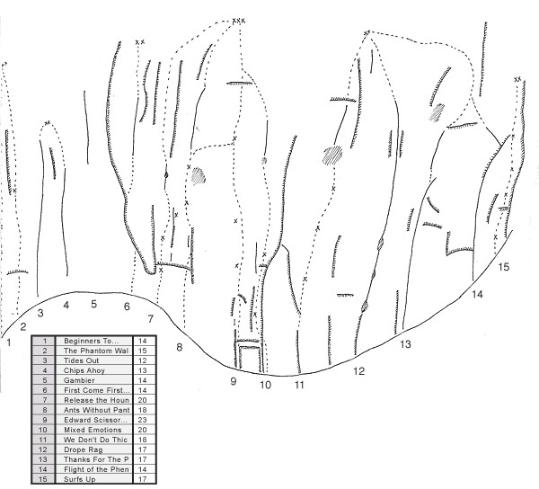

How to get to the carpark
Travelling north, after taking the Glasshouse Mountains Tourist Route off the Bruce Highway, drive for 6.5 km to a L turn marked 'Forestry Nursery' (before reaching the turn-off for the Glasshouse Township). Take it. Drive L under the railway bridge, then up R and along the dirt track past the nursery on your R, then take the signposted L-turn towards the mountain (sandy dirt track). You'll pass two more brown and yellow National Park signs saying ‘Mt Tibrogargan’ before reaching a carpark on the L (1.3km from the main road turnoff).
How to get to the rock
Opposite the carpark is a warning sign. A well-beaten track leads to the east face from the sign. After approximately 15 minutes, the track meets the rock between Carborundum Chimney and Patience Crack.
The following routes are all approached from ground level up the E face track. In order to more easily locate routes on the left half of the E face, routes between Carborundum Chimney and Clemency will be listed from R to L. Routes R of Carborundum Chimney will be listed from L to R in normal fashion.

*Carborundum Chimney 92m 11
Start: 10m or so L of where the E face walking track meets the rock (40m L of the Caves Route). Marked 'CC'.
A time-honoured bumbly classic. So named because of its abrasive properties, this route follows the large, prominent chimney on the E face. When you're wedged in the chimney, spare a thought for when this was climbed with nothing more than a rope and a couple of slings!
1) 35m Originally the crux pitch. Up face, then follow the crack with bridging moves to a rest position. Up face above passing a PR to large ledge. Bridge up the gully to the second ledge. Poor belay.
2) 25m Up easy wall (good pro) to tree. Up and L to enter the chimney. Climb up wide groove to big sling belay in the 'Bomb Shelter'.
3) 17m (crux). Harder since repeat ascentionists have trundled some chockstones used by original party. Bridge up into the chimney to stance and pro. Chimney up past chockstones and hidden PRs (on back wall) to ledge. Belay off large chockstone at back of ledge.
4) 15m Continue up chimney until it finishes at a ledge and TB. From the belay ledge, escape off to the R along scrubby ledge to connect with the Caves Route above Cave 2. Alternately, it is possible to go L-wards up the V-gully and follow terraces up to the summit.
Neill Lamb, Mark Andrews 1955
Insurrection Wall
The next five routes ascend a fine section of cliff named Insurrection Wall. All routes are of premium quality.
First Contact 20m 20
Start: 15m L of Carborundum Chimney.
Burly and exciting. Up blocky slab to base of overhung wall. Clip FH and pull into the crux. Jug upwards passing another FH until it eases. Up more easily (wire, big hex) to chains.
Lee Skidmore, Neil Monteith 17/07/1999
*Insurrection 25m 18
Start: About 5m L of First Contact beneath crack.
Waltz up easy slab to base of L-leaning crack. Pull into this and enjoy white Arapilesean rock for 5m before breaking off R and up to first of three black FH’s. Continue up steep face passing two more FH’s to chains.
Lee Skidmore, Menno Smits 21/04/1999
**Insurrection VS 28m 21
Start: Downhill, 5m L of original.
An excellent variant, adding 8m of quality climbing. Stickclip first FH and pull onto bottomless wall. Push straight up, then traverse R below bulge to second FH. Directly through bulge to meet original at crack at top of white rock. Continue up original.
Lee Skidmore 21/04/1999
*Nine Month Sojourn 25m 20
Start: 8m L of Insurrection VS at blocky orange corner.
Quite demanding. Strenuously up passing SLCD slots, then slightly R to jugs. Up wall above (wires) tending L to meet LOAJP at the rooflet. Continue up LOAJP.
Neil Monteith, Lee Skidmore 16/07/1999
**Leaving On A Jet Plane 25m 20
Start: 2m L of Nine Month Sojourn
An outstanding R-tending line located on the far L of the wall. Stickclip first of five FH’s and pull onto bottomless wall. Crank natural campus rungs (FH, wire) up superb stone to rooflet (FH). Find a way R-wards up steepening wall past two FH’s to chains.
Neil Monteith, Lee Skidmore 16/07/1999
Steaming 60m 16
Start: In vague gully 15m L of Leaving On A Jet Plane, below slab with low red roofs on the R. The belay ledge at the top of this pitch has a tree sticking out horizontally.
Climbed accidentally, thinking that it was the start of Clemency! On the first ascent, Neil used all the rope and soloed the final 8m, leaving Simon to solo the first 8m to tie in. Simon quit climbing soon after! Advice: use a 60m rope. Good advice: avoid this route entirely. Up the slab to the vertical wall, trend up and to the R below loose roofs then climb straight up aiming for the belay ledge with tree. It is safer if you keep slightly to the R of the ledge as the top half below the ledge is quite loose. Protection is very sparse - four pieces were placed on first ascent.
Neil Monteith, Simon Hennig 12/1994
***Airtime Over Pumicestone 245m 21
Start: About 4m L of Steaming at big tree next to rock apron.
Take wires and SLCDs to #3, with a strong emphasis on small SLCDs such as aliens.
1) 35m (18) Easily up L trending ramp to white corner (FH). L up this and R onto ledge above bush. Traverse R up slab (FH) to vertical section. Carefully place gear then crank up this to easier ground. Two close FHs lead up slab and over small rooflet to rap station.
2) 30m (18) Take lots of small SLCDs. Up and slightly L 5m, then almost directly L 3m past gear slots. Move up past FH to gain corner on R side of the big orange roof. Through corner to rest ledge above roof. Straight up from ledge without falling for 5m to FH, then a big traverse back R above your belayer to solid black rock. Up past FH to rap station under blocky arête (60m rap to ground). Mind rope drag on this wandering pitch.
3) 40m (21) Cruxy right off the belay. 11 FHs up exposed blocky arête. The arête terminates into a wide gully with a rap station on L.
4) 40m (19) Climb the nice wall on L side of gully (four FHs) to an easy slab. Run up this (two FHs and gear) to where it steepens. Two FHs and a big hollow flake allow you to get across the chasm to ledge and rap station.
5) 60m (2) Climb up onto vegetated ridge. Walk L until it's possible to scramble up onto the next terrace. Walk all the way back R along this to find a FH on the wall.
6) 40m (19) An unlikely but excellent start past the FH leads into a groove. Carefully up this to ledge on L. Up the headwall slab above (four FHs) to rap station.
Either scramble up 50m to summit and walk off, or rap the route.
Lee Skidmore (1, 2, 4), Phil Box (3, 6) 15/02/2003
*Dreadnought 375m 16
Start: On the SE wall about 100m L of Steaming at the 50m high vegetated ramp sloping diagonally R.
Take wires, RP’s and SLCD’s to #3. 255 vertical metres from base to summit.
1) 50m Follow ramp until it finishes on a vegetated ledge.
2) 20m Easily L along ledge and up through obvious weakness in wall above (old pegs) to a ledge and technical belay in corner on R.
3) 10m Up corner, then out to R before cutting back L along ledge to FH and SLCD belay (optional).
4) 40m Up corner on R (tricky), and then diagonally R across slab to bush belay.
5) 35m Up slightly L to the end of the scrubby ledge (Clemency Terrace). Beware loose blocks. Belay.
6) 20m Walk L along ledge to below obvious crack/flake corner.
7) 50m Up corner and at top out R to easier ground. Continue diagonally out R to a large vegetated gully. TB. This is a superb, rope-stretching pitch.
8) 30m Up slab L of gully to ledge and bush belay.
9) 30m Up to ledge and belay in continuation of gully above the Carborundum Terrace.
10) 20m (crux) Enter groove from L (delicate) and straight up to belay at horizontal break at stance.
11) 40m Out L and through juggy bulge. Up easy angle wall to TB.
12) 30m Through scrub and rock walls to summit scrub field. Another 80m above is the summit
Ted Cais, Mike Meadows 16/05/1970
Dreadnought VF 75m 18
1) 55m (crux) Starts at the base of Dreadnaught’s eighth pitch, where it climbs L into the groove. Don’t! Instead, veer R and climb low-angle slab to stance (poor gear - green alien, #3 peenut). Hard layaway rockover to good crimp. More committing moves with danger of a ledge fall, then good jug. Crack above takes med SLCD’s. Moderately up good slab to a PR in pocket. Hard pulls on good holds through bulge to crack (med-large SLCD’s). Follow easing line up intermittent crack to belay on ledge (PR, SLCD, wires).
2) 20m (10) Veer L up slab to join original
Darrin Carter, Mark Poole 12/08/2000
*Lancelot 90m 15
Start: 15m L. Initial visible under small block.
Originally graded 7! Not many routes get their grade more than doubled between one guidebook and the next.
1) 20m Up for 10m to first vegetated ledge. If you want to belay here, walk to far L of this ledge to find a good DBB, otherwise link this pitch with the next (better).
2) 30m Walk all the way back to the R end of the belay ledge. Up with some difficulty to a bowl. Keep climbing up and R aiming for the diagonal vegetated ledge above. Clip PR before last headwall and climb up this to base of ledge. Good DBB.
3) 25m Climb up onto block on far R of ledge and climb straight up slab to a nice, very slabby R-facing corner. Clip PR and traverse R under blocks to another PR. Climb straight up the wall above (more like grade 18 moves?) with scant protection to slab. Up and R to easy slab which ends in an easy corner and PR belay.
4) 15m 4) 16m Straight up corner with good pro to belay at base of pitch 7 of Dreadnought (L-facing corner crack). To reach the Halfway House area and the rap tree on Clemency Terrace, traverse 30-40m L on slabby ground. Alternatively, the top of Tibro can be attained by continuing up Dreadnought.
Ken Grimes, Peter Kennedy, Eric Hewett 02/05/1966
The next four routes start on the apex of the track.
*Guenevere 90m 17
Start: 6m L.
A solid multipitch undertaking. Experienced Tibro climbers will enjoy the challenges Guenevere offers.
1) 15m (14) Nice wall climbing direct to Lancelot's DBB. Runout in the top half. Sling the jug at half height.
2) 30m (17) A double rack of aliens would reduce anxiety. L off DBB and up nice wall above for 10m to stance. Up R-trending ramp to bulgy steepening. Place gear in R-leaning crack, then up and L with some steep moves to the L side of a spiky bush ledge (which is 20m below the landmark bright orange corner). From ledge, go diagonally R up easy ramp (bad rope drag) for 10m to belay at base of 10m high, black scooped groove.
3) 45m (17) Carefully up the runout groove. Step L above groove and up slab to exciting chimney. Up this to TB on Clemency Terrace. Walk L 5m and rap from Clemency's tree-anchor (2x 50m raps). Alternatively, the top of Tibro can be attained by the last three pitches of Clemency.
Lee Skidmore, Phil Box, Samantha Coles 16/02/2003
**Divergence 20m 19
Start: 2m L directly beneath the landmark bright orange corner 60m up.
Classic and exciting. Up 4m to R-facing sickle-corner. Up this, then slab up to bulge (silver FH). Steep corner (tiny wires) through bulge to ledge and rap station.
Phil Box, Cameron Fairbairn 26/10/2002
**Alienation 18m 20
Start: 4m L.
This finely sculpted L-leaning thin crack may alienate those without aliens - small SLCDs are a must. Overcome the crack to gain slab where two FH's point the way to the rap station. Sustained climbing.
Lee Skidmore, Phil Box 22/12/2002
The Mace 18m 22
Start: 3m L.
Up past slots to base of short crackline (shrub at base). Up this to clip FH, then pit your tips against some razor crimps to easier ground with FH on bulge. Finish at station as for Alienation.
Phil Box, Lee Skidmore 22/12/2002
*Clemency 230m 16
Start: Starts 11m L on dark brown rock, downhill from the track's apex at a flat little clearing to belay from under some blocky roofs at 30m, and 15m R of grey rock.
Description kindly supplied by Ted Cais (updated by Lee).
A historical classic adventure climb of great character up the S.E. corner of Tibro to the R of the orange overhanging wall. Named in memory of John Clements who was Les Wood's climbing partner in England. The hardest climb in the State for its day. Although the line is straight, individual pitches zigzag a bit. The major landmarks are the big groove (pitch 3) and the scrubby terrace at half height. Technical hard moves are isolated, but route finding is difficult, protection poor and some holds suspect, so the leader should be very solid in the grade to avoid an epic. There is no obvious LLR and one can easily wander off route into a thrill zone.
1) 35m (15) 10m runout off the deck up blocky slab. A further 10m with a tricky step-left (PR and small SLCD) to R-trending ramp beneath the blocky roofs. Belay on the ramp off gear.
2) 50m (crux) Ascending, traverse 10m R to hollow white flake below bulge (the original aid move complete with PR). Back up the peg before carefully cringing up R to easier ground. Up a ways until you can traverse L to ledge below the huge corner (rings at base - 50m rap to ground).
3) 50m (14) An excellent pitch. Up initial corner and through small rooflet to continue up into the huge corner. Exit out R and up to rap anchor on tree on Clemency Terrace (aka Halfway House). Walk 20m L along the terrace and up a little hill to the base of a R-trending ramp.
4) 35m (12) A tricky start that would demolish grade-12 leaders is the key to continuing up remnants of the big groove. Struggle past loose blocks and prickly grass defending good hex placements along the slanting crack R to a stance.
5) 30m (9) Up and trend L to below final corner capped by large blocks suspended in anti-gravity mode.
6) 30m (11) This overhanging time bomb is defused by an exciting move L followed by a mellow romp up the rib and ejection into the summit scrub field.
A thousand cuts must now be endured passing through vile scrub to attain sanctuary and clemency (?) on the tourist track.
FA Les Wood, Donn Groom 19/04/1966. FFA Unknown.
**Aphelion 87m 22
Start: Roughly 30m L of Clemency below apex of overhanging orange wall, at the small rock cairn.
Great climbing in a superb position. Even though it's sporty, don't forget where you are - take helments, prussiks, and a healthy dose of caution.
1) 35m (15) At rock cairn climb straight up until first FH becomes visible. Nine FH's up to rap station below steep wall on L.
2) 12m (21) Climb R past two close FH's. Then straight up past a third FH to rap station on big choss ledge.
3) 30m (22) Straight up orange corner and face above. Fantastic climbing. At ninth FH step R and up to rap station on sloping ramp.
4) 10m (22) Short and sweet. Mount bulge from L. At ledge on top, rap anchor is on L. A fixed rope leads up and R onto Halfway House terrace.
Cameron Fairbairn, Phil Box 16/07/2004
The Halfway House
Hosting some superb routes in a fabulous position, this wall is located 90m off the deck on Tibro's East face (on Clemency Terrace). It can be reached various ways, the easiest of which is by climbing the first three pitches of Clemency or Lancelot (trad) or Aphelion (four pitch sport). As you walk up to the base of the wall from Clemency’s third pitch belay and rap anchor you'll see a 1m roof at head height. This is a landmark for locating routes.
Cunningly Deceptive 25m 21
Start: At the black corner about 10m L of The Court Jester and 3m R of where the track angles steeply uphill.
Climb the corner with tricky protection to rooflet with good gear. Around this and slab up R a fair way over blocks passing a FH to rap station.
Phil Box, Lee Skidmore 30/03/2003
The Court Jester 40m 17
Start: 4m L of the landmark roof is a R-trending blocky weakness.
1) 15m (15) Bouldery moves off the deck to good holds. Trend R up obvious corner/weakness. Easily negotiate shrubbery to arrive at large triangle ledge. Shared rap station on R end of ledge. The two FH's leading up from here are for Maponus’ second pitch (23).
1) 25m (17) Continue up corner 3m, step L into next corner and up for 4m. Step L out of corner and climb over short steep bit (crux). Walk easily up slab to find rap station underneath large roof. 30m rap to the terrace.
Phil Box, Cameron Fairbairn 02/03/2003
Emu-less 12m 22
Start: About 6m R, just R of the landmark roof.
Boulder up over the roof, then step L up past two FH’s on the front of the pillar. Up and over on to the slab (green alien on L) then up (thin gear) to Jester’s rap station on ledge.
FA: James Pfrunder, Phil Box, Pat Daly 22/06/2003
FFA Cameron Fairbairn 07/2003
*Gut Punch The Budda 12m 23
Start: At the landmark roof, as for Emu-less.
The R side of the roof sports some protruding blocks. Crank through on these and blast the corner above past four FH's to Jester’s rap station on ledge.
Lee Skidmore, Phil Box 30/03/2003
**Maponus 37m 23
Start: 3m R of Gut Punch The Budda.
1) 12m (22) The arching crackline on natural gear. Finishes on the large triangle ledge (with Jester’s rap station).
2) 25m (23) Directly above belay. Two FH's protect a few gut-busting moves on small crimps. After that, head up and through placing gear to pull on to easy terrain. R and up on slab for about 15m to spiky bush ledge which hides rap station. 35m rap to the terrace, or short rap to Dagda anchors, then 25m to ground.
Cameron Fairbairn, Phil Box 02/03/2003
*The Sword In The Stone 25m 18
Start: At Jester’s rap station atop pitch one of Maponus.
Head L into corner and up for 3m. Step R for 3m underneath suspended flake (above the 23 section of Maponus). Up for 4m and finish up slab as for pitch two of Maponus.
Phil Box, Cameron Fairbairn 02/03/2003
**Dagda 25m 25
Climb Maponus’ first pitch and then directly up past three FH’s to station. 25m rap to ledge. Short, but quite technical.
Cameron Fairbairn 22/06/2003
***Voluptuous 11m 24
Start: 1.5m R of Maponus at smooth orange streak.
A high pull-on jug, then perfect finger slots lead to the first of three FH’s. A devious crux and continuous sidepulling will have you feeling really happy to pull on to the finishing ledge (rap station). A deliciously curvy conquest on sublime, marble-like rock.
Lee Skidmore, Phil Box 29/03/2003
**The Republican Guard 15m 24
Start: 7m R at the end of the vegetated section of ledge.
The L-trending line of five FH’s. Classic endurance climbing which feels much longer than it is. After clipping the last FH, traverse L to Voluptuous’ rap station.
Phil Box, Lee Skidmore, James Pfrunder 04/05/2003
Pat's Route (project) 30m 23?
Start: Beneath the bolted orange corner.
A bit of a minefield? Keep off until cleaned up and sent.
**Pigs In Space 30m 26
Start: About 5m R, on dangerous ledge.
Thin moves off starting ledge (be careful) and then thug your way up square cut edges to a pumpy crux traversing R and up to ledge. Continue more easily up prow to anchors on a small ledge in a corner. 8 or 9 bolts.
Cameron Fairbairn 07/2003
*DV8 30m 26
Start: Up Black Op's clipping its first bolt, then head out L. 8 bolts. Also finishes same as for SW.
Cameron Fairbairn 26/11/2003
**Black Op's 30m 24
Start: Up past a few FH’s into corner until you can pull L onto wall. Up this great wall past more FH’s to a rest stance. Easier ground past a few more FH’s, then the anchor is up R (same as SW).
Cameron Fairbairn 07/2003
Storm Watch 30m 23
Start: Beneath the corner
Cam advises micro - hands sized SLCDs to supplement FH’s. #3 wire and green alien in runout section, with unpleasant moves above. From last bolt, station is at orange streak on ledge above you. 30m to ground on rap. Should be entirely bolted.
Cameron Fairbairn 07/2003
Spooky House 30m 17
Start: As for pitch seven of Drednaught, at the far R of the Halfway House ledge at the huge L-facing corner.
Climb D’s corner until it runs out. Instead of stepping R, step L into another gently overhanging corner, climb through bulge and head straight up 15m looking for SW’s anchors. Bad gear in second half with some friable rock.
Cameron Fairbairn 09/07/2003
Now we jump back to the Carborundum Chimney area where the routes will be listed from L to R. The walking track from the carpark along the east face meets the cliff at this point.
**Patience Crack 85m 15
Start: 8m R of Carborundum Chimney at a big tree.
This is a great, well-protected route.
1) 40m (crux). Up nice crack to top of white rock. From here, there are two options. 1. Trend L and up to ledge then continue up and R for 18m to base of crack. 2. Continue directly up through the half-chimney.
2) 24m Follow the obvious crack straight up, by layback, bridging and wall climbing. Gain stance where Faith crosses wall and belay off tree.
3) 22m Traverse R and up continuation of corner, to finish on ledge and TB. Up easy rock and some scree, then out R to join the Caves Route.
Les Wood, Donn Groom, Woody Milroy 21/06/1966
Faith 105m 12
Start: Diagonally up and to the L of the start of the Caves Route at a small, flat ledge at the bottom of a series of sloping ribs. Marked 'F'.
This is a hard grade 12 - exposed and poorly protected.
1) 32m Diagonally upwards to the R across the sloping ribs and then up and onto a small ledge on the crest of an obvious nose. Slightly back to the L on downward sloping ledges to the base of a small, loose wall. Up this wall to small tree runner. Continue up the wall and then out to R onto lightly vegetated shelf running up to the L. Steelwood TB at L-hand edge of shelf.
2) 18m Directly up behind tree and into the obvious groove above. Up the groove/crack in the corner and out onto the L-hand wall. Straight up to a small stance.
3) 13m From stance, climb straight up small wall to L of crack and then ascend diagonally L over small rib. A traverse leads to the L over a series of sloping ledges for 10m to two wide, flat ledges in the middle of the face. Belay.
4) 18m Straight up the wall above for 5m, and then a delicate traverse to the L leads to the wide crevice in the corner. Step across the gap and then up to prominent shelf on the far wall.
5) 23m Climb the 3m wall behind the ledge to the start of a rubbishy gully. Up through the gully, or out onto the L-hand bounding rib (much cleaner) to large TB. From here, the exit of Carborundum Chimney is joined and scrambling to the R leads eventually to the Caves Route.
Bill Peascod, Neill Lamb, Julie Henry 21/05/1955
***Caves Route 300m 4
Start: 20m R of where the E face walking track meets the rock. Marked 'CR'.
Queensland's own mountaineering-style classic that has introduced the climbing experience to many a gibbering bumbly. This has always been the traditional easy route up to The Scrub (below the summit overhangs). With the recent addition of two rap stations, it provides an easy, safer E-face descent than scrambling. Most of the rock on the route is quite worn making route-finding easy. Many parties rope up for three pitches, interspersed with unroped scrambling. To start, scramble up vegetated ledges following worn track to below wall with gully on L side. Up the gully to top and TB.
1) 20m Traverse out R and up rock 'steps' with surprising exposure to ledge and mouth of Cave 1. Belay off rap station.
Scramble into Cave 1 and up into the big Cave 2. Walk to far L side of this.
2) 30m Traverse carefully out L side of cave until possible to move up to ledge. Up steep wall above with little pro to ledge and rap chains on R.
From the ledge follow the worn track through the scrub for 100m or so until you hit rock again. Walk R along cliff base to below obvious easy chimney on south facing wall.
3) 20m A hard start gets you in the chimney which is easily climbed to top. Follow the ridge W to summit of Tibro.
An optional easier finish (avoiding the chimney) is to scamper up to Trojan, then walk R under Big Empty to scramble easily to the summit ridge.
Bert Salmon 06/06/1926
Keloid 45m 9
Start: About 70m down R from the Caves Route at low angled wall.
Up 15m of slab below a small buttress. Then up the centre of the buttress to finish at Steelwood trees in a grassy area. The Caves Route is 10m L at this point.
Dennis Stocks, Neill Lamb 1966
Wasp 85m 10
Start: Start about 10m R of Keloid at the foot of a scoop of easy angled slabs. Marked 'W'.
This route is considerably undergraded.
1) 36m Up the slabs and diagonally L across the top side of a gully. Continue on a L trend until steepness eases to worn slabs. Continue on up to the L for another 4m into a gully and dodgy TB.
2) 18m Climb back down and traverse directly R along small ledges across to a piton below a groove. Continue R and slightly down for 3m to twin PRs. Belay off these and wires.
3) 29m (crux) L a bit, then straight up to base of a groove. Up this ('Wasp Groove') with adequate pro to sloping rock and TB. From here, scramble up and L to connect with the Caves Route.
Neill Lamb, Dennis Stocks 22/01/1967
Wasp RHV 70m 12
Start: Same as for Wasp.
1) 40m Virtually straight up to the twin PR belay at the end of Wasp’s second pitch.
2) 29m Same as for pitch 3 of Wasp.
J. Mather, M. Siwek, K. Jesienowski 10/07/1983
Directissima 100m 13
Start: Between Wasp and Desperation Wall.
This route is underprotected - beware!
1) 28m (crux). Up easy slab, up onto the wall and trend slightly R and up to PR, then on up to a bulge. Up a R-trending groove in the L-side of the bulge, then slightly L of white streaks to a belay on ledge.
2) 41m Climb directly up from ledge to find PR at 11m. Continue straight up to overhanging wall, then a short traverse L to base of groove. Finish up 'Wasp Groove'.
Paul Caffyn, Mike & Chris Meadows 30/12/1967
*Line Of Credit 60m 16
Start: 5m L of Desperation Wall.
Very well protected climbing in good position for grade.
1) 30m 12 FH’s to rap station.
2) 30m 10 FH’s to rap station.
Darrin Carter, Kevin Coleman 17/07/2004
*Desperation Wall 130m 15
Start: At the base of an impressive blank wall about 10m R of Directissima. Marked 'D'.
This route climbs good solid rock but is dangerously runout. Note that various other finishes have been done, but the best is as described.
1) 22m This pitch has very little protection. Straight up on nice rock for 8m, then traverse diagonally R with care on sloping holds (poor #3 SLCD in pocket) to ledge and belay.
2) 17m Traverse L for 5m then up scary, thin wall with little pro with a slight R trend, then up to small ledge and BB.
3) 50m (crux) Straight up for 5m to vertical wall. Turn this wall to the L and head for the yellow overhang (PRs). Continue up shallow corner (med wires) skirting overhang on R to ledge and bush belay.
4) 25m Continue up into Cave 1.
Ron Cox early 60's
Desperation Wall UQBWC Finish 100m 6
Start: In the belay cave on top of pitch three of Desperation Wall.
1) 33m Traverse down from cave to R below big overhanging bulge. Traverse horizontally R passing Ishoni's chains to ledge and TB.
2) 32m (crux) Ascend straight up past some loose rock to ledge and TB.
3) 37m Continue vertical line on great rock and holds to groove on R. Up groove to TB. Scramble up to Cave 3
Ron Cox, Pat Conaghan 1962
**Ishoni 40m 19
Start: Scramble up onto vegetated terrace 20m R of Desperation Wall, then walk off L-end of terrace 3m to tree. Belay out of wide crack.
A proud line. Double ropes essential. Up L around bulge, then up to first of three black FH’s. Up and L to ledge (big gear). R off ledge to horizontal break in superb marble-like stone, then back L to FH. A long, undercling reach, then up to the last FH. RP's take you up the ever-steepening wall, then a good wire and a thankful rest on easy ground. Slab to chains. Well protected with careful placements.
Lee Skidmore, Aaron Jones, Neil Monteith 31/07/1999
**Black Orpheus 145m 10
Start: About 30m R of Ishoni at big corner/gully. Marked 'BO'.
A great, easy multipitch route although pro is pretty sparse in places. A good initiation to Tibro multipitches. Can be done in three pitches with 50m rope.
1) 20m Very easily up gully on big jugs and good pro to ledge and TB.
2) 45m (crux) Up wall above ledge to slabby stance. Traverse R up this slab with little pro to another ledge and optional shrub belay. Walk to far R of ledge. Climb up edgy slab in an exposed position with no protection until it eases and you reach a tree-lined ledge. Scramble up L to the top of the ledge and TB.
3) 40m Bridge up outside of chimney which is better than it looks. Scramble up trending L to top of gully, then trend R up easy slab to TB.
4) 15m Slab very easily up L to big tree just below Cave 3 to belay, then scramble up.
Finish up the Caves Route, or descend via rap station at mouth of Cave 1.
Sid Tanner, Andrew Spiers 24/07/1969
Black Orpheus Variant 35m 10
Start: At the end of pitch two of Black Orpheus about 5m R of the chimney.
Start up short crack, then diagonally L past old PRs on great rock. When you hit the chimney, climb the wall R of it on good holds to an easy scramble up trending L to top of gully, then trend R up easy slab to TB. Finish as for pitch four of the original into Cave 3.
Unknown 1960's
Orpheus 150m 8
Start: About 20m R of Black Orpheus. Marked 'O'.
This route is fairly contrived.
1) 25m Up an open rock gully to a TB.
2) 29m Trend R over a horrendous flake, then diagonally up to a TB.
3) 27m Up slab trending L to a line of small trees. L along dirt ledge to the face R of the Black Orpheus chimney. This ledge is the same as the end of pitch three of Black Orpheus.
4) 28m (crux) Up onto the wall R of the chimney. Traverse R-ward around to rubbly gully. Up this gully to a TB. This is the same belay as the top of pitch three of Prometheus I.
5) 40m Finish as for the fourth pitch of Prometheus I.
R. Brooks, G. Baines 25/08/1957
Earthenware 25m 10
This route climbs the delightful white streaked slab 3m L of prominent corner, just L of Prometheus I. It has little pro but great rock. TB.
FSA Neil Monteith 13/06/1996
Prometheus I 120m 4
Start: In big gully about 30m R of Orpheus on the E face. Marked 'PI'.
This route has many variations - this description is only one of them.
1) 23m Climb up into the rock gully, walk R along tree thicket then scramble L and up to base of steep rock.
2) 27m Climb rib to the R of the belay using large holds. A tree runner is at the top of this. Continue tending L over loose and broken rocks to TB.
3) 20m Traverse R from belay around buttress, then up to TB.
4) 32m Ascend to short vertical wall which reaches across the face. Traverse across smooth slabs below the wall to a large dead tree, which is the belay.
5) 32m Traverse back L across the top of the wall over easy rock to a host of TBs.
6) 10m Scramble up short rib and cross to large tree below final wall.
7) 17m Climb up into chimney from belay tree. From here, Cave 4 can be reached by continuing up the chimney and eventually climbing out to the R, or several ways exist of climbing out to the L.
Neill Lamb, Ron Brooks 1953
The North-East Buttress 300m 11
Start: To find the start of this route, continue down and N from the start of Prometheus I for about 80m past a short vertical wall to find a vegetated gully.
This route is extremely long and route finding is difficult, but it does have the merit of good rock and little vegetation.
1) 20m Easily up gully to TB.
2) 28m Up for 5m then R around the buttress below some loose blocks. Keep traversing around to the R, ascending slightly to gain a spacious ledge and natural gear belay.
3) 37m Ascend R from ledge to short wall. Traverse this to the R and above PR in block. Now ascend tending R slightly up to TB.
4) 27m Cross to the L on sloping ramp up to TB below buttress. Stance on spacious ledge.
5) 33m Straight up on good rock to PR belay below steep wall.
6) 18m Traverse R around buttress and up into a wooded gully, below a steep, yellow groove. TB. You can escape from the route here by traversing L to meet Cave 4.
7) 37m (crux). Up wall on L, traverse L over big loose block then up to yellow patch below steep wall. Up bolt ladder (originally aided) with hard moves, then traverse R below big block to BB.
8) 33m Pass under block traversing L, then straight up tending slightly R to small bush and ledge. BB.
9) 33m Straight up past mangled bolt (useless) to second BR. Delicate move past this straight up past two more mangled bolts. Gain easier ground. TB.
10) 33m Scramble out to L on sloping ledge which leads to NE shoulder.
Paul Conaghan, G. Hardy 1965
Rock Garden 225m 11
Start: About 100m R from NE Buttress below obvious large chimney (10m L of pillar with FH’s).
This route is loose and has tricky route-finding.
1) 33m Up wall below chimney. Tricky move L around overhanging flake. Move up trending diagonally L until vertical ascent can be made to the base of the chimney. Ascend chimney (narrow and strenuous) climbing out onto main rock wall when chockstone is reached. Climb onto this chockstone and continue on to top of buttress to large tree for belay.
2) 37m Vertical ascent for 8m then horizontal traverse R to seams. Straight up to a small niche/alcove, then belay off natural gear.
3) 40m Delicate move out of belay up L. Ascend until short R traverse can be made into scunge-filled crack. Ascend vertically about 7m and then traverse L, up and out of crack. Tree runner. Continue ascent through scunge until a diagonal R traverse brings you to a large TB below a blank wall.
4) 37m (crux) Climb steep ramp in front of belay tree to tree runner and ascend onto vertical wall. Climb directly over loose holds, leading to a delicate traverse on small holds. Handholds around corner of bulge lead to wide shelf and TB.
5) 40m Straight up over extremely sloping horizontal strata to ramp. Follow ramp R until you get to a TB.
6) 37m Straight up over good holds to NE shoulder.
John Tillack, Dennis Stocks 07/08/1966

**Sunburnt Buttress 185m 19
Start: Start as for Rock Garden (just L of Peeping Tom pillar on Shadow Glen).
WARNING: July 2004. Bolts on this route are missing/unsafe. Stay off until the route is fixed.
Lots of rock, bolts, and air; a Lost Boys style adventure for the masses. Bring SLCD’s 0 - 3, Wires, 8 Brackets, and helmets. Route gets sun until 3pm, hence the name!
1) 28m (18) Up Rock Garden for a few moves then climb wall on R past six BR's to U-bolt anchor.
2) 30m (15) Trend easily L across Rock Garden to FH. Keep climbing diagonally L past another three FH's and a BR, then run it out with marginal gear to small ledge and U-bolt anchor.
3) 25m (crux) Beware - lots of loose rock on this pitch. Lee copped a falling rock on his back on the first ascent. Straight up past three BR's then traverse directly L over rotting rock past one BR and two FH's to arrive safely on ledge with U-bolt anchor. You’ll need a confident second!
4) 36m (16) Start going L then up exposed headwall with improving rock quality past seven BR's to reach U-bolt anchor.
5) 45m (14) Finally some good rock. Trend slightly R past thin cracks heading for the dead tree up high. Five BR's and some assorted small SLCD’s will get you to a large vegetated ledge and big chain.
6) 20m (10) Easily up wall above to arrive at bushes and the north-east summit ridge. No protection on this pitch. Double ring belay.
To descend: Rap down three pitches then rap straight down to gully and big tree. One more rap from tree will get you on the ground. Allow 1.5 hours for descent.
Neil Monteith (led all), Lee Skidmore 19/03/2000
Shadow Glen
The next routes are situated on a compact wall named Shadow Glen just R of Rock Garden. The routes are a mixture of bolted and naturally protected routes on great rock. A small cave at the far R of the crag can be used as a rain shelter. The first routes are on an obvious detached pillar with FH’s.
Peeping Tom 8m 18
First route on pillar with FH near top. Boulder start to crack - up this to stance. Climb the face above past silver FH to juggy top. Tree belay. A bit dirty at start.
Neil Monteith, Stephen Monteith 07/01/1997
*Kitsch 9m 22
Good stuff! Starts at same point as Peeping Tom, but traverse directly R to first of three black FH’s. A pronounced crux lunge will get you to the second, then it keeps you going past the final FH to top. Rap off tree or downclimb easy corner.
Lee Skidmore, Aaron Jones, Neil Monteith 04/02/2000
Sweet Flower Girl (open project) 10m ??
Start: 2m R of Kitsch.
Not too inspiring. Up very thin face past bolt to join with second bolt of Kitsch.
Attempted by Marten Blumen, Neil Monteith 10/1996
*Suburban Sprawl 15m 22
Start: 2m R of Sweet Flower Girl.
A technical wake-up call. Jug up to FH. Hard moves lead to second FH. Traverse L and up to big jug. Slam in #2 flexible SLCD behind jug and climb up to crack (SLCD). Traverse R and up to tree belay.
Neil Monteith 24/03/1996
Suburban Sprawl Variant 15m 21
Start: As for original.
From second FH climb up and R to finish up Domestos.
FTRA Karl Curnow 16/03/1996
Domestos 15m 16
Start: 2m R of Suburban Sprawl.
Up very thin crack (good RP's) to slabby face above. Up this very boldly with no pro to toilet-bowl stance then slab up to tree belay. Dangerous.
Neil Monteith, Karl Curnow 24/03/1996
The next routes are on the main wall about 5m R of the pillar.
Vagabond 35m 15
Start: On wall about 10m R of pillar at odd looking rock face.
Up on good positive edges with marginal protection for 10m. Keep climbing upwards past cracks until on ledge with big loose block. Climb up the wall on the R side of this to slab and tree belay on L. Reasonable protection and good rock.
Neil Monteith, Karl Curnow 21/04/1996
*Highlander 45m 16
Start: 5m R of Vagabond and just R of scungy crack.
Up wall past FH to stance. Edge up slab above on good finger holds trending slightly R (2 FH's) until you reach the cracks. Fill these with pro then continue up easier slab above on minimal pro to final headwall finish. A small RP and various sized SLCD’s protect this last 10m. Tree belay. Average protection up a sustained slab.
Neil Monteith, Marten Blumen 16/06/1996
*Brick Boxes 20m 20
Start: 10m R of Highlander.
A tribute to urban development. Up wall to ledge. Up R side of this (FH) and crimp onto slabby face (FH). Trend L and up to stance (FH). Traverse R and up wall above passing a FH to chain. An edgy sport climb.
Neil Monteith, Alister Robbie, Karl Curnow 21/04/1996
Tribulation 25m 13
Start: At Brick Boxes' chain.
Climb wall above on marginal protection to top and tree belay. Excellent marbled rock in middle half.
Neil Monteith, Karl Curnow 21/04/1996
**The Black Planet 20m 20
Line of four black FH's up excellent face 2m R of Brick Boxes with a bouldery crux at the bulge. Finishes at BB's anchor. Was originally a variant of BB and was led without the first three FH's.
Neil Monteith, Marten Blumen 11/08/1996
**Flame 'N' Sparks 25m 18
Start: 4m R of TBP below obvious L leaning thin crack.
Sustained and technical - one of the best here. Up crack to top (gear) then runout traverse R and up to FH. Climb unlikely wall above (FH) on surprisingly good holds to slabby stance. Continue up past two more FH's to lower off anchor.
Neil Monteith, Marten Blumen 14/07/1996
Brit Pop 15m 23
Start: 6m R of FS at vegetated corner.
A contrived offering. Easily climb corner for 8m until a large jug is found on the R wall. From this swing R onto wall (#1 SLCD in crack). Clip FH and edge like mad up bulging rock to anchor. Has been onsighted, but can you say sandbag?
Neil Monteith 12/04/1997
Liquid Pleasures 15m 18
Start: 3m R of BP.
Best left alone. Up the crack until it blanks out. Climb the face above on sideclings and poor RP protection to vegetated ledge and tree belay far back. A bold finish.
Neil Monteith 18/05/1996
The next three routes are on a short slabby wall about 20m L of the cave and about five metres R of LP.
Vege Abattoir 13m 14
Start: 2m L of Armageddon.
Up slab, over small roof to finish at A's chains. Rock is good but protection is non-existent.
FSA Neil Monteith 13/06/1996
*Armageddon 13m 17
Start: Start 5m L of obvious curving crack (Inspiration).
Popular. Up easy edgy slab to bulge and BR. Over this with difficulty to slab and FH. Up this past 'fish bowl' jug to double rap anchor. Excellent rock.
Ana Greer, Neil Monteith 18/05/1996
*Inspiration 13m 10
Start: At the big crack just R of A.
Up the crack on good pro and great rock to A's rap anchors. A perfect beginner route if clean.
Karl Curnow, Neil Monteith 21/04/1996
A smooth, slabby bouldering wall is situated just R of Inspiration. It is a good warm up for the harder routes.
North Face Route 85m 8
Start: At the base of the central N face. Marked 'NFR'.
A bush-bashing affair with some rock here and there.
1) 35m Almost straight up, zigzagging slightly to find LLR to a gully. TB.
2) 12m Out of the gully to the R, and up to trees. From this stance scramble unroped up sloping rock (grade 1) dotted with trees to dense undergrowth. Bush-bash straight up to a buttress and follow around to the R and up to a rock wall.
3) 20m Up a rock gully on the L to a TB. Emerge from the undergrowth to find a slab.
4) 20m (crux) Trend L up the rough slab to a TB. Scramble up L over easy rock and through undergrowth to NE shoulder.
Nobody ever owned up
Felp 200m 10
Start: At the base of the NW face. Marked 'F'.
Start at the base of the NW face. Marked 'F'. This route is a very indirect bush-bash with one decent rock pitch. To find this roped pitch you must climb a wide gully on mank and grade 1 rock until angle steepens at orange-yellow streaks up on the L. Traverse R along this ledge to the end. Up diagonally R on grade 1 rock to the base of Felp proper.
1) 15m Virtually straight up to a ledge and TB.
Follow LLR diagonally R, then traverse R over grade 1 rock. Continue along a dirt ledge, then up. Diagonally R on grade 1 rock to scrub. Bush-bash to the summit through undergrowth and over mank and easy rock.
Shane & Col Smithies 17/09/1977
West Track - -
This is the tourist track, which climbs the manky face on the W side. The track starts from the National Park picnic area on the W side, and thanks to erosion is now visible from space. It requires no climbing experience and is in reality a rambly, steep bushwalk. Depending on fitness, the walk up takes 35 - 50 minutes. It is the preferred descent route for many of the multipitch routes on the E face. The rock is marked at intervals with paint, and the lower half is peppered with interpretive signs, fences and benches (and they whine about the odd bolt?).
Tom Welsby 1886
Microtome 100m 14
The first known technical route on the SW corner. The SW corner of Tibro contains a relatively clean and smooth 60-degree slab. It is bisected by a scrubby ramp that traverses diagonally up from R to L, starting under a vertical section of cliff on the S face proper and ending at the tourist track halfway up the W face. This route takes a direct line up the centre of the clean slab wall and ends on this scrubby ramp (a direct continuation is possible). Descent is by easy scrambling down the ramp to the right.
Pitches 1, 2, 3: Straight up middle of wall. A small overlap is surmounted near the top of the third pitch. Pleasant and delicate climbing on good rock with occasional thin-crack protection.
Ted Cais, Blair Roots, Mike Meadows 24/03/1973
The following routes are located on the S face. Access as described for Slider Wall below.
Better You Than Me 50m 18
Start: About 30m L of On Bended Knee at wide, low-angled crack.
1) Follow crack until it runs out and start slab climbing trending L to a BR. Easy moves to DBB.
2) From DBB, stand up and clip FH before moving L across slab past hollow flake to roof/overlap (small wires). Through (#3 RP), then weakness above on low angle wall with SLCD’s and a FH to chain. Rap off with double ropes.
Scott Lawrence, Gary Meyrick 09/1999
On Bended Knee 45m 17
Start: Step onto wall from L end of RD’s start ledge.
This route is a direct line to Rain Drops’ chain.
1) 15m (8) Solo up easy rock to DBB on large ledge. No pro.
2) 25m (crux) From belay, climb up to two good wires at 3m, then up trending slightly L to FH. Take obvious weakness through bulge (wires, red alien), to BR 2m above. Up and R to small ledge and RD’s chain. Rap off with double ropes.
Scott Lawrence, Neil Monteith 09/1999
*Rain Drops 45m 14
Start: On the south face, about 200m L of the South Face Route / Slider Wall. Look for a jutting prow of white broken rock about 50m up. This route starts on tree-lined ledge, above ground level, about 15m R of the prow.
1) 15m (10) Up easy buttress with good pro to ledge with large pocket. Belay off several large SLCDs.
2) 35m (14) Trend L and up past PR and fixed RP into faint, L-leading weakness. Follow this with minimal protection to small ledge and chain. Rap off with double ropes.
Gary Meyrick, Scott Lawrence 11/1999
South Face Route 185m 8
Start: Start at the base of the central S face in an opening to a ravine. Marked 'SFR'.
This is an extremely vegetated climb, not recommended to pure rock artists or to the inexperienced route-finder. To gain the first pitch, climb up the wide ravine on grade 1 rock for 75m, zigzagging to find LLR to yellow rock corner. Traverse R-ward along base of the rock face for approximately 20m.
1) 18m Up a broken rubbly gully, past an old PR to a TB.
2) 26m Continue up with a slight R trend, past more PRs following LLR to a TB. Up into bush and rubble - at this point you have two alternatives. 1: Continue on up diagonally R, through undergrowth and mank to the SE corner then bush-bash to summit. 2: Trend L on grade 1 rock until yellow overhanging rock is in view. This rock is above the yellow corner.
3) 32m From a TB, traverse L across an exposed, vegetated ledge and up a short rock pitch. Belay above the yellow overhang.
4) 24m Straight up, then rock and vegetation to a wall. TB.
From here scramble L along base of wall for 35m and across a small stretch of slab.
5) 40m From a TB climb up a wide gully (thick vegetation). Then up a vertical, vegetated gully to a TB on the L side. Continue up the gully to a white corner.
6) 47m Up slabs adjacent to the corner for about 10m. Traverse R for another 10m then up to top.
Unknown
Slider Wall
The next routes are located on the L wall of the South Face Route gully. The best way to access this area is directly from the E-face carpark. From the carpark, don’t take the small track to the east face. Instead, walk west along the fire trail for a few hundred metres. Walk along until you’re about level with the big, white open gully on the cliff (plainly visible). A vague track leads R up through the low scrub to Slider. Walking time to base of gully 15-20 minutes. To make the descent down the gully safer, the boys have installed a rap station 20m L of Howler (doubled 50m ropes required).

Blowing Bubbles 15m 17
Start: At base of gully below black FH's.
Up past FH then move L onto small ledge (FH). Continue up with crappy wires then trend R to L end of roof (crucial slung med SLCDs). L onto wall above (very poor gear) to ledge and rap station.
Scott Lawrence, Gary Meyrick 19/12/1999
*Monkey Magic 10m 23
Start: 5m R.
Sharp crimping up the steep, pock-marked face with four FH’s to rap station.
Scott Lawrence, Gareth Llewellin, Gary Meyrick 06/1999
Scramble carefully up the gully for 50m utilising some fixed ropes along the way until you hit the next routes on the obvious overhung L wall.
**Squealer 21m 23
Up Howler for two FH’s, then traverse L (crux) past two black FH’s. Keep the pump going up steep ground past another black FH and runout to rap station.
Gareth Llewellin, Lee Skidmore 16/01/2000
***Howler VF 20m 25
Harder than the original. Traverse up L at Howler’s fourth bolt along rails to FH and a huge dynamic crux. Rap station out L as per Squealer.
Gareth Llewellin 12/12/1999
***Howler 18m 24
The best sport route in the Glasshouses. Superb moves on mostly big, flat holds. Five FH's with a late crux to rap station. Gareth’s done it cleanly up, down, weighed down, in slow motion, and with bare feet. Seriously.
Gareth Llewellin 12/12/1999
*Wailer 18m 25
Start: Up Howler heading R after the first bolt. Up past another four bolts to finish on the R-hand end of the Howler ledge (shares H's anchor).
Gareth Llewellin, Ross Ferguson 26/06/2004
*Wowler 18m 25
Wailer into Howler. Up Wailer heading L after the second last bolt. Finish up Howler clipping its last bolt.
Gareth Llewellin 26/06/2004
The following routes do not start on ground level; instead, they begin high up on the E face. They are listed from L to R.

Overexposed 120m 15
Start: About 10m below the extreme top of the gully above Carborundum Chimney.
The climb goes up the steep black wall L of the Tibro's E summit overhang with good technical moves and plenty of exposure with great stances in the small caves.
1) 33m (crux) A hard start up the steep wall, then R into a small gully. Bear R again over easy ground to the foot of a wall and PR. Up and to the R over thin holds, very delicately, towards the top R corner of the wall. Easier towards an overhang. Over the overhang and into a small cave.
2) 20m Out of the cave on the R, then step around the corner onto the very exposed wall. Straight up, then tend R towards another small cave (the one on the L). Good holds but exposed.
3) 17m A difficult move out of the cave, moving up under the roof of the cave on the L out onto a point. On top of the cave easier ground, then traverse R above cave and around the corner and up to yet another small cave.
4) 17m A difficult groove in the roof of the cave. Wide bridging here with easier climbing above into cave stance once more.
5) 33m Out of the cave on the L, up a rib which is a bit loose, L below a loose block to easier climbing, traversing L. The stance is found below a black wall. Traverse off L along an easy ledge and up through bush and mank to summit.
Les Wood, Donn Groom 30/07/1966
Overexposed DF - 16
From the top of pitch 5 on Overexposed climb black wall and slab above with no protection to top.
John Oddie, Rick White 13/09/1970
**Out Of The Blue And Into The Black 80m 24
This route climbs the impressive overhang situated at the top of Tibro's E face. The start is marked by an archaic bolt at the base of a horizontal crack. This route was originally done in five pitches with the first and second split
1) (22) Climb R-ward across the horizontal crack with good pro to a crux transition move from horizontal to vertical around an angular block to get established at an awkward stance (optional belay), then up the vertical finger-crack to belay stance.
2) 15m (crux) This pitch traverses R with little pro. To make things safer, place a high runner 5m above pitch two's belay. The pitch moves R-ward from the belay and heads for the hanging ear of rock 15m away. Stay under the ridge of overhung rock and place a runner (#2 SLCD with long sling so the second can practice the crux before unclipping) in the only obvious placement about halfway along the traverse. Do not trust the knifeblade in the ear. Thread the pierced ear with a long sling (about 7m or so!). Technically this 15m section is only 22 but it gets two grades extra because you are in unprecedentedly scary country. Up the corner formed by the ear with SLCDs for the roof & small RP's for the corner. Steep, technical and wild climbing. You can traverse off and up to safety or do pitch 3.
3) (23) Crack climb up the overhung bowl to the summit.
Rick White, Marty Beare, Dave Moss 1980
*Raptures 60m 24
Start: In the obvious corner 15m R of Out Of The Blue And Into The Black.
"One of the most serious routes in Australia, I thought I was going to die for sure" - Kim Carrigan. On the crux pitch, Kim was out 10m from a #0 RP.
1) 30m Up the corner on great rock to natural belay stance.
2) 30m Traverse L along lip of overhang to top.
Kim Carrigan, Paul Hoskins 1980s
***Trojan 70m 13
Start: At the top L of The Scrub and is marked ‘T’.
A stunning classic through some very imposing country. With retrobolts removed by concerned climbers, this is now restored to its original glory as a bold route, the way it was originally done in the 60s. Note that the first ascentionists climbed the route wearing sand shoes!
1) 14m (crux) Step out L from belay and climb confidently on slick orange rock passing some thought-provoking placements. Runout in top section. A selection of SLCDs including #4 or 5 are useful at top belay.
2) 14m Another bold pitch. Walk L across ledge for about 10m and then about 4m of vertical climbing (#0.5 SLCD in slot) up into cave. There is a single FH with ring in the cave for the belay, but you may wish to step out of the cave (exposure!) and set a better anchor in the third pitch crack.
3) 15m Step out of cave and climb finger-crack/corner to ledge. Dizzying exposure, secure jams, great rock and bomber pro. The best pitch of the route. Optional chains exist on far R of ledge (two 50m ropes) which provide an escape via one of the best free-hanging abseils in Queensland.
4) 15m Climb the crack-corner to ledge.
5) 15m Avoid the chimney and instead climb the sweet crack up the slab to the L. To finish, simply scramble up the vegetated scree to the top of the mountain.
Les Wood, John Tillack 12/03/1966
*Short And Sweet 35m 13
Start: This climb takes the obvious R-leading corner crack about 20m R of Trojan. Marked ‘S’.
Atmospheric climbing up a polished R-tending groove. Protection on the route is quite technical to place, and is sparse at the start (crux) so be careful not to slip off. Bring some big gear for the upper crack. Belay off tree at top. A doubled 50m rope will get you back to the ground from the tree. You are actually rapping straight down The Digital Revolution.
Les Wood, Ted Cais 16/07/1966
**Adrenaline Gives Me Gas 40m 22
Start: At Short And Sweet.
1) 27m (22) Up S&S for 20m to big rest where you can traverse L onto slick orange wall (FH). Crux past this on polished marble to second FH, then up to belay in back of cave on natural gear.
2) 13m (22) Belay-gripping exposure. Out R side of cave roof past three FH’s on outrageous overhanging rock using pockets and slopers. Finish up awesome slab on perfect little edges past a final FH to double rings. Rap off.
Neil Monteith, Marten Blumen 13/03/1998
Big Empty 30m 20
Start: At line of four BR’s up wall just R of Short And Sweet.
WARNING: July 2004. Bolts on this route may be unsafe. Stay off until the bolts are tested and fixed.
This is technical slabby weirdness on great rock. Bring some medium SLCDs to protect the upper half. Belay as for tree on S&S. This pitch can be linked with Adrenaline or Circlet to give a sustained outing.
Neil Monteith, Gareth Llewellin 26/03/2000
**Circlet 16m 22
WARNING: July 2004. Bolts on this route may be unsafe. Stay off until the bolts are tested and fixed.
Very exposed steep thugging on the wall right of Adrenaline’s second pitch. Starts at the top of Short And Sweet and traverse L a few moves then up and around the arête to a small cave. Now blast up the slopers to finish at A’s anchor. Three ringbolts and two FH’s.
Neil Monteith, Gareth Llewellin 26/03/2000
The Digital Revolution 28m 18
Start: 10m R of Short And Sweet
L wall of small cul-de-sac past FH to stance. Slab (a few wires and SLCDs - poor pro) to TB. The last 10m are groundfall country!
Neil Monteith, Marten Blumen 30/06/1996
Kronos 23m 11
Start: You must ascend a slab (grade 2) to get to the start, which is on a dirt ledge near a very small cave.
Up R (past mouth of cave) then L into short water-worn chimney. Chimney and bridge up this to a slabby finish up the NE shoulder.
Dennis Stocks, Barry Collier 19/07/1966
Jupiter 40m 13
Start: At the base of the third groove L of the Caves Route chimney and climb up the slab to a stance.
1) 21m Up the groove and out to the R onto a ledge.
2) 18m (crux) Up the groove directly above the first pitch, then climb up the wall R of the smooth groove and up to ledge. Up L to the NE shoulder.
Shane & Col Smithies 27/09/1985
Juno 30m 13
Start: At the base of the second groove L of the Caves Route chimney.
Up the groove to a ledge. Continue up the groove to another ledge, then up twin grooves. From this point, out L onto a slab and then up to the NE shoulder.
Col & Shane Smithies 27/09/1985
Hercules 30m 9
Start: Below the first groove L of the Caves Route chimney where The Scrub track meets the slab.
Up the slab for 13m and into the groove. Up the groove and into a gully, then out on to the NE shoulder.
Col Smithies 10/05/1985
The following two routes start in Cave 3. Best accessed via the Caves Route.
Super Directissima 23m 12
Start: At far R side of Cave 3. Marked ‘SD’.
Boldly step R out onto face. Directly up, keeping R of bulge. Minimal protection.
Paul Caffyn, Mike & Chris Meadows 06/01/1968
*Traverse To Cave 4 40m 2
Start: At R-hand base of Cave 3.
Not bad fun across an exposed, unprotected traverse. Climb down and around to a wide dirt ledge. Traverse R, down a big step, then follow this ledge which slopes diagonally upwards and then diagonally downwards and move around into Cave 4. When returning, don’t start too high. Keep low.
Bert Salmon, Lyell Vidler 1926
The following routes start in Cave 4. Most easily accessed via the Caves Route to Cave 3, then doing the Traverse To Cave 4 as described above.
Prometheus II Traverse 60m 8
Start: Start at upper R side of Cave 4. Marked ‘PII’.
1) 30m Traverse out R along a ledge and around the shoulder, across a small section of slab (no gear for 10m). Up the easy slab to a broken section of rock and over this up to a vertical crack (but don't climb it).
2) 30m (crux) Traverse diagonally L, up a little, then enjoy the exposure as you continue traversing around the corner. Follow the ledge to an area below Cave 5.
Unknown
Prometheus II 45m 8
Start: At upper R side of Cave 4, but higher than the previous route, up on top of small buttress. Marked ‘PII’. Note that the topo picture more accurately depicts the grade 18 (DF) version.
1) Start at the "PII" mark, straight up to the top of the buttress (no gear for 6m), then traverse right across the easy slab to the broken rock, up this to the vertical crack (same as for PII Traverse).
2) 23m (crux) Traverse L (as for PII Trav.) for 10m, then straight up to the area below Cave 5. Apparently very run out and loose.
Bill Peascod, Neill Lamb, Julie Henry 13/05/1956
Prometheus II VF 20m 11
Start: At PII.
Climb as for PII to the vertical crack. Traverse diagonally L for 7m, then directly up.
Unknown
Prometheus III 13m 13
Start: At PII.
Hard for the grade with virtually no protection. Climb as for PII to the vertical crack. Traverse diagonally L for about 4m, then directly up.
Sid Tanner, Andrew Spiers 24/07/1969
Prometheus II DF 20m 18
Start: At PII.
Climb as for PII to the vertical crack, but this time, climb the crack direct.
Unknown
How to get to the carpark
Entering the Glasshouse Township, turn L at the first intersection, drive over the railway line and turn L into Coonowrin Road at the T-junction. Drive along this for 1 km until past the school, where you veer R onto Fullertons Road. A further 1.3 km will see you at the signposted car park (with tap).
How to get to the rock
Follow the well-worn path for about five minutes to encounter the Lower Cliffs.
Follow the well-worn path from the carpark for about five minutes to encounter the Lower Cliffs.
The Lower Cliffs are divided into four distinct sections - Flat Battery Wall, Owl Pillar, The Lower Main Cliffs and The Cave. Most of the climbs are bolted sport routes with a sprinkling of easy, naturally protected slabs. These cliffs are perfect to climb on during the hotter part of the day as they are shaded by the lush forest surrounding them.
Flat Battery Wall
This small buttress is situated just to the L of the main walking track. The wall has two bolted routes and three other easy slab climbs. Abseilers and instruction groups use this area extensively and have damaged trees and other vegetation at the top. Please refrain from setting up top-ropes or abseil ropes from the smaller trees.
Climbs are listed from L to R.
*Bad Move 10m 17
Start: At L of wall. Marked 'BM'.
A thin crimpy wall on great rock past two BR’s. Use a large bracket or a wire on the first bolt as it's oversized. Suffers from wet conditions.
Darrin Carter, Grant Bucknell 10/05/1993
**Flat Battery 10m 13
Start: 2m R of BM.
Probably the most ascended route in the Glasshouses. A mini classic up a juggy slab past two BR’s. TB.
Darrin Carter, Grant Bucknell 10/05/1993
Where's Marty? 10m 12
Start: 2m R.
A bouldery, slabby route with minimal protection.
Neil Monteith, Mark Bennett 1994
Sexy Legs 15m 15
Start: 2m R of WM.
Vegetarian's delight. Over bulge, through fern-filled crack to twin juggy flakes. Up unprotected mossy slab to top.
M. Welsh, Ingrid Smits, Martin Worth 1994
Roof Climb 15m 12
Hardly! Start: 6m R of Sexy Legs, R of wide crack. Up slab on nice rock to stance under bulge. Over this on big jugs to easy but unprotectable finish.
FSA Neil Monteith 1993
Owl Pillar
The next six climbs are situated on the obvious free-standing pillar R of the walking track. Five of the routes are bolted sport routes and one is an easy beginners ramble. They are all worthwhile routes on good rock. A chain is situated on top. As this is a very public climbing area please refrain from excessive loud noise and swearing! The wall L of Midnight Makeout has been top-roped, but no more bolts are needed on Owl Pillar.
Climbs are listed from the NE side in an anticlockwise direction.
Midnight Makeout 7m 22
Short but hard. Stickclip the FH then blast up overhung wall to join up with the top of Afternoon Delight. Don't fall off getting to the second BR. Originally led using a large jug L of the FH but this was pulled off by an unsuspecting climber!
Alister Robbie 1994 (grade 20) Re-established Neil Monteith 1995
The Pillar Connection 10m 22
Follow Midnight Makeout through bulge (FH) to stance. Step R to FH on Afternoon Delight, then continue R. Clip BR on Dawn Raid, then finish up slab on Morning Madness and clip its last BR.
Neil Monteith 1995
Afternoon Delight 7m 18
Start: 2m R.
Jug upwards past a FH and BR. Bolted and climbed by an unsuspecting Darrin Carter after Neil’s solo ascent.
FSA Neil Monteith 1993
*Dawn Raid 9m 19
Start: 2m R.
A pumpy wall climb with a bold runout at the top. A FH and BR protect this route.
Neil Monteith, Marten Blumen 1994
*Morning Madness 10m 18
A well-protected mini route. From 2m R of Afternoon Delight, head R (BR) to overhung edge. Layback up this (BR) to slabby finish (two BR’s).
Neil Monteith, Marten Blumen 1995
Easy Solo 13m 4
The slab up the back.
FSA Aboriginals, well before the white man came
The Lower Main Cliff
This is the large cliff beginning behind Owl Pillar. The rock is friable in places and generally lacks good natural protection. Be wary, routes on this cliff may have loose blocks and 'exploding' handholds.
Climbs are listed from L to R.
Breakaway 40m 7
Make sure the holds don't. Directly opposite Midnight Makeout. Up the juggy groove with okay protection to the slab finish onto the ledge.
Ian Thomas, Dave Gilleson 03/1971
*Daily Constitutional 35m 10
Start: 5m R of Breakaway.
A super-jug festival. Romp up the bold, wide crack for 15m, then continue slightly L up steepening slab to the top of the buttress as for B.
Ian Thomas, Dave Gilleson 03/1971
Vertical Cabbage 40m 10
Start: At the end of the deep ravine.
The name says it all. An awful chimney up a slimy and vegetated funnel passing some chockstones. Beware of loose rock at the top.
Dave Gilleson, Ian Thomas 03/1971
*Acid 25m 27
WARNING: July 2004. Bolts on this route may be unsafe. Stay off until the bolts are tested and fixed.
The testpiece for aspiring pumpers. Sustained climbing up the overhung wall of the ravine. For many years the short grade 22 version used to finish at a chain on the fifth bolt. No longer. Stickclip RB, then up past three more RB’s to gain jug and fifth bolt. The hard and technical finish continues past three FH’s to rap station.
Short version (22): Neil Monteith, Marten Blumen 1994
Full version (27): Cameron Fairbairn 17/6/2000
*Good Vibrations 35m 7
Start: 6m R of Acid at base of ravine.
A great, juggy slab route with little protection. Finish on ledge with tree. Rap off from here or climb short wall above to exit.
Ian Thomas, Dave Gilleson 03/1971
Trench Tactics 40m 11
Start: About 15m R of Good Vibrations.
Adequate pro. Climbs the opposite side of the Acid buttress. Scramble up to big tree and cave to begin. Up with good pro for 10m. Move R wherever necessary to avoid loose rock/vegetation/wide crack, then move back L into the corner at the obvious point. At the top of the corner, escape off L and down to TB. Rap off.
Lee Skidmore 14/03/1999
15-20m R of Trench Tactics is a vegetated corner. The top of this (not visible from the ground) opens into a steep chasm, similar to the Acid ravine. To access, either do an easy slab pitch, or walk in from the top on an indistinct trail from above Ngungun’s Cave to reach an obvious steep ravine, then rap in. The actual rap station for the route is not accessible without rapping down part way.
*Watch Your Back Jack 18m 20
Big holds up an overhung wall. Stickclip first FH, then use tree to gain start jugs. A big throw, then pump away up L passing second FH to jugs and #1 or 1.5 SLCD. Traverse L and up passing two more FH’s to rap station. The last FH is tricky to clip.
Lee Skidmore, Menno Smits 21/03/1999
Back on ground level. About 50m R of Trench Tactics are some blocky orange roofs.
Forsaken 20m 22
...but not forgotten. Several years earlier, Monteith placed a BR off to the R of this route but discarded it. It took the persistence (and jiggery-pokery!) of Box to get the line bolted and sent. Five RB’s lead up the overhanging orange rock. The climbing is quite bizarre. A rap station is located on the big ledge above and to the R of the last overhang.
Phil Box, Stephen Parker 17/02/2002
Cardiac Arrest 30m 16
Start: 5m R of the orange roofs on the black rock.
L-trending climbing up poor, overhung rock with minimal protection. Find the LLR (and most protection!) to arrive at the tree above the orange roofs to rap, or alternatively rap from Forsaken’s station situated about 4m directly below the tree. Originally climbed as an access route for inspecting the orange roofs.
Neil Monteith, Marten Blumen 1994
**Summer Holiday 24m 18
Start: Start about 10m R of Forsaken.
Enjoyable overhanging climbing. Take brackets. Climb slab passing hard-to-see BR and up to beneath roof. Clip FH above then hard moves through it. Trend up and R to FH. A hard reach move leads to another FH. More juggy climbing past a BR leads to chains on slab.
Darrin Carter 10/1998
*Biyatch Pants 25m 22
Start: Start 3m R of Summer Holiday.
Climb slab passing RB to beneath large roof. Clip RB above. Strenuously crank over the roof (to the R of the RB) with little finesse to clip RB. Wipe forehead, then move up and L to join SH at its third bolt.
Lee Skidmore 17/02/2002
**Serenade For Rings 17m 21
Start: 3m R at featured arête.
Slab up the arête past RB to top (ye olde BR). Swing straight up onto headwall (RB). Committing, sporty climbing with big moves directly up the headwall passing two more RB’s to rap station on ledge.
Lee Skidmore, Samantha Coles, Stephen Parker 17/02/2002
**Present And Accounted For 18m 20
Start: At Serenade For Rings.
Climb SFR to top of arête, but don’t clip BR. Lean R to clip RB before swinging out there. Big throws and fine moves past the remaining two RB’s caps things off. Finish at SFR’s rap station.
Lee Skidmore, Neil Monteith 01/1999
Xposure 45m 16
Start: At rap station of Present And Accounted For.
Note: Currently not climbable. Stay off until fixed protection is replaced.
Link this with PAAF to create the longest route on Ngungun. From the station, climb slab on L past two FH’s (chopped) to overhung wall. Place high blind #4 Rock and up wall past FH (chopped) to arrive at slab. Up and slightly R past two more FH’s (chopped) and big runouts to arrive at tree-lined ledge. Walk off. The first ascent was done at night with only headlamps to light the way!
Gay Welders Union 1998
Linkage 15m 10
Not really worth recording, but here goes anyway: from rap anchor of Present And Accounted For, traverse R and up to finish at Absentia's chain. No pro.
Neil Monteith 1998
Back on ground level now, about 15m R of Present And Accounted For.
***Absentia 20m 17
Very popular. Pocketed water-worn runnel with four FH’s which is solid at the grade. If it has just rained don't bother - this route follows a waterfall groove! Rap off chain.
Neil Monteith, Marten Blumen 1994
Dog's Balls 50m 12
Start: At Absentia's chain.
Named by the second whilst he trundled large blocks. The wide groove above Absentia's chain. You can finish out L or R near the top. Protection is limited. In his edition of the guide, Col Smithies censored this route's name to Dog's Body, believing the original to be too offensive. He should do the next Nowra guide.
Neil Monteith, Marten Blumen, Dave Hall, Alister Robbie 1994
Kicking Brass 50m 15
A nice, long adventure with some thought-provoking pro.
1) 15m (3) Starts 10m R of Absentia. Up R-leading gully slinging two trees as pro, then climb directly up the easy slab to tree and ledge (natural belay in pockets).
2) 35m (crux) Many of the pockets take gear (mostly hexes), so take a full rack. Diagonally L off the belay to good wire before wide crack, then up to bulge. Go L to avoid the bulge and up to second bulge. Resist temptation to trend R up ramp - instead go L through bulge to pro. Directly up black rock to FH. From here the line is direct up the steep juggy wall passing a crucial #6 hex pocket and second FH. Once on the upper slab, clip the last FH and traverse 5m R along ledge to chains.
Pitch 1: Neil Monteith, Marten Blumen 1994 Pitch 2: Lee Skidmore, Philippa Newton 14/3/99
*Get Into The Groove 50m 15
Destined for popularity because the second pitch is entirely bolted.
1) 15m As per first pitch of Kicking Brass.
2) 35m (crux) Slightly L, then R up white corner to mini-rooflet (3 FH’s). Over this, then runout slab to headwall. Up this beautifully scooped groove passing 3 FH’s to chains.
Lee Skidmore, Menno Smits 19/02/1999
The Cave
This is the cave situated on the R side of the track as you continue towards the summit. Climbing is prohibited here as loose rock can hit bushwalkers. Please stay off the three routes located here.
Unknown 20m 17
Start: 10m R of cave.
The blocky wall past four very dodgy BR’s. Don't trust the bolts.
Unknown 1993
Passive Action 17m 13
Start: 3m L and directly in front of the 'No Climbing' sign.
The obvious, L-leaning crack with fantastic protection. The crux is getting off the ground.
FRA Lee Skidmore, Erik Smits 02/1997
Unknown 20m 18
Start: 2m L.
A rising traverse above the R side of the cave. A lone BR is found halfway along the traverse.
Unknown 1994
The Upper Cliffs are divided into two sections - Main Cliff and The Nursery Cliff. These two south-facing cliffs sport numerous cracks, corners and walls of good quality, with plentiful jugs and protection. This means the majority of climbs are in the low to medium grades and most are naturally protected. Most early climbs were initialled for easy location.
The easiest descent from Ngungun's summit to the base of the wall is via a 50m rap from the rap chains above Pocket Full Of Kryptonite.
Main Cliff
The main cliff is situated on the southern side of Ngungun and is just below the summit. To get to the base of this impressive wall continue past the Cave on the walking track to the summit. Once at the halfway plateau/lookout continue about 125m up the main track until a small white arrow on a rock marks a faint track leading off L (before the turtle-shell rock). Leave the main path here and follow the vague path L and then down and around to the base of the Main Cliff.
Climbs are listed from R to L.
*Classical Gas 27m 16
Good old-fashioned climbing. Marked 'CG'. Bridge up the corner until situated on top of the pillar. Step L and climb the juggy groove to a TB. Climb out, or you may wish to bring tape to rap off. Good protection.
Steve Bell, Barry Overs 01/1971
**Carpe Jugular 45m 17
An exciting multipitch, and the first of four classic long routes. The second pitch makes a great rap-in climb.
1) 17m (crux) Start up Visions Of A Transmitter, then traverse R at about 15m to stand on top of the fern ledge (DBB).
2) 28m (15) Layback through small roof on R, and up corner (FH) to ledge. Clip second FH on steep black wall, and crank through on big pockets. Up the featured crack and face to finish. TB.
Lee Skidmore, Philippa Newton 06/03/1999
***Visions Of A Transmitter 45m 18
This obvious twin cracked corner 5m L of Classical Gas soars upwards for 30m until confronted by a roof. Traverse R (or climb R through this) and climb the juggy face to finish. Beautiful, well protected climbing.
Marten Blumen, Dan Meyers 1994
***Visions Of A Transmitter DF 45m 18
Mega exposure! Jug haul through the roof directly to finish up Ensorcelled's wide crack.
Neil Monteith, Marten Blumen 1995
***Ensorcelled 45m 17
Start: As for Icehouse.
It's magic! Classic, sustained climbing with excellent protection. Climb Icehouse past the tree at 5m to ledge on R. Climb the skyrocketing corner directly above the ledge to roof. R through this (big hex) and directly up the wide crack above.
Lee Skidmore, Philippa Newton 06/03/1999
***Icehouse 45m 16
Start: Start 2m L of Visions Of A Transmitter below the tree at 5m.
A superb climb up an exposed face crack which is easier than it looks. Climb the juggy face for 40m until the final crack section makes things a little tricky. Belay off a tree far back. The protection is good, but because the rock is a bit weak, be sure to place a lot and make sure it’s bomber
Tony Dignan, Steve Bell 1975
Six Sided Hell 45m 20
Start: 1m R of Sticky Fingers.
Up slab to shaft. Up this with awkward placements to ledge. Clip FH and blast through bulge. Continue up shaft on RP's, small wires and a FH to ledge. Finish directly up Hex Heaven's flared corner.
Lee Skidmore, Erik Smits 08/08/1999
Hex Heaven 50m 16
Start: At Sticky Fingers.
Climb SF to its belay tree. Sling this and traverse two metres R onto arête. Up L side of this on good holds but limited protection to pillar (belay possible). Finish up flaring corner (hex heaven) to TB. A somewhat contrived offering since the addition of Six Sided Hell.
Rob Scott 1991
*Sticky Fingers 18m 12
Marked ‘SF’. Climb the slab up and L to the base of the crack. Layback and jam up this with good protection to the small tree. Rap off.
David Kahler, Steve Bell 1970s
*Angie 18m 13
Start: 2m L of Sticky Fingers at the obvious flared chimney.
Marked 'A'. Bridge chimney with good protection in the R crack to the ledge and tree. Rap off.
Steve Bell, Barry Overs, Dave Gilleson 1971
Bloodsucker 45m 18
Start: Marked 'B'.
1) 15m (10) Climb the easy twin grooves to the L of Angie to the TB.
2) 30m (crux) Up onto top of short pillar, then fire directly up the face above with minimal protection until the juggy face crack is reached. Climb this great crackline to the top and TB.
FA (13 A2) Dave Kahler & Steve Bell 10/72 Darrin Carter, John Hattink 2/93
For this next climb walk from the summit of Ngungun towards Coonowrin for 50m until a chain is reached. Rap down this chain to find a DBB. The climb starts here.
**Pocket Full Of Kryptonite 12m 17
Start: From DBB.
A good sport route which is bearing the brunt of much traffic. Follow the worn pockets up arête and corner past three BR’s to the top. Hard for the grade but well-protected.
Darrin Carter, Darren Watter 10/12/1993
The following two routes are located midway up the cliff. To gain the start ledge, do Bloodsucker’s first pitch.
*Witch Hunt 14m 21
Start: At the thin crack running up the blunt pillar 4m to the R of Keyhole's leaning pillar.
Climb straight up the pillar with difficulty, then traverse L to the ledge below the start of Pocket Full Of Kryptonite. Two FH’s and small SLCD’s.
Neil Monteith 1996
*Tower Of Power 18m 16
This novel route climbs the outside of Keyhole’s leaning pillar. Access by Bloodsucker’s first pitch or rapping in from Pocket Full Of Kryptonite’s chains. Belay on R of pillar’s base. Scramble up R to clip first FH, but route must be started directly from base of pillar. Balancy start passing two FH’s, then natural gear to top. Scramble up 3m to belay at base of PFOK.
Lee Skidmore 13/02/1999
Back to the base of the Main Cliff. 5m L of Bloodsucker.
Keyhole 45m 6
Start: Marked 'KH'.
Scramble up the vegetated gully to the base of the leaning pillar which forms a chimney. Climb up and inwards to the 'keyhole' and squeeze through with difficulty. Bush bash upwards to a TB. Leave this one for the bushwalkers!
Dennis Stocks, Bob Fick, Darryl Poole 09/09/1967
Feeling Groovy 40m 15
"Havin’ some fun…" Marked 'FG'. Straight up the deep hand crack which becomes very vegetated at the top. Finish easily up blocks. Good protection but poor climbing. TB.
Trevor Gynther, Steve Bell 10/1973
Feeling Groovy VF - 15
From the second stance on Feeling Groovy take the L-trending crack and then finish up the top of Heartache.
Col Smithies, Betty Margetts 15/11/1990
Heartache 40m 17
Start: Marked 'H'.
The start offers good climbing with a nice hand crack but soon the climb deteriorates to the likeness of its two predecessors.
Steve Bell, Dave Kahler 1970s
Stand To 40m 16
Start: Marked 'ST'.
A contrived hand crack which becomes very vegetated. Not great.
Dave Kahler, Steve Bell 1970s
*Deep Purple 25m 13
Start: Marked 'DP'.
Nice climbing up the corner with good protection and crackwork. Rap down off tree or continue up the chimney or twin grooves above.
Steve Bell, Dave Kahler 12/1972
Leaning Tower 27m 14
Start: Marked 'LT'.
Start up the nice handcrack but this soon turns into a wide offwidth. At the widest point, squeeze through the crack and chimney up to ledge. Rap off or continue up one of the crack lines above.
Steve Bell, Dave Kahler 10/1972
*Rubber Soul 45m 15
Start: Marked 'RS'.
Climb the fun, pocketed wall with twin cracks to the ledge and TB. Continue up the easy chimney above.
Steve Bell, Dave Kahler, Bob Bell 10/1972
Gyroscope 45m 15
Start: Marked 'G'.
Juggy climbing up the groove to a grass tree blocking the corner. Climb around this and up easy crack to finish. Good protection throughout most of this long route.
Dave Kahler, Steve Bell 1970s
*Speed King 45m 21
Start: Marked 'SK'.
An impressive route for back in the day. Hard and desperate climbing up the thin shallow crack leads to easier ground and the good crack above. Be careful with protection down low.
Dave Kahler, Steve Bell 1973
Marathon 45m 18
Start: Marked 'M'.
Desperate bridging up the under protected flared chimney leads to easier ground. Take many small SLCDs and wires.
Dave Kahler, Steve Bell 1970s
Baby Driver 25m 19
Start: Marked 'BD'.
Bold face climbing up the blank wall with only small RP's as protection. Once past the first 10m, it eases to fairly juggy climbing and a TB.
FA (17 A1) Barry Overs 3/9/1970 Neil Monteith 23/3/1994
Carmen Revisited 40m 16
Start: Marked 'CR'.
Up the broken wall with good protection to a small corner. Climb this past a chockstone and onto a ledge. Bridge up the hard chimney on the L and surmount the overhang to another stance. Finish up the twin cracks to a TB.
Dave Kahler, Steve Bell 1970s
Fallen Knight 25m 17
Start: Marked 'FK'.
A nice looking crack but the climbing is only average. Finish on halfway ledge of Carmen Revisted and rap off.
Dave Kahler, Steve Bell 1970s
Previous Commitment 40m 17
Start: Marked 'PC'.
A very contrived thin hand crack which eventually joins Bridge Over Troubled Waters. If you can avoid the temptation to stray, this climb is quite hard and sustained.
Steve Bell, Dave Kahler 1970s
*Bridge Over Troubled Waters 40m 15
Start: Marked 'BOTW'.
Easy crack climbing leads to a stance at the section of missing pillar. Traverse R into PC and bridge boldly up the twin cracks. Above this, climb the tricky twin cracks to finish. Jamming technique useful.
Barry Overs, Ron Collett 30/09/1970
CUFA 40m 16
Start: Marked 'CUFA'.
The offwidth start sees few ascents and rightfully so. It features poor rock and unenjoyable thrutching. This wide crack eventually narrows down to a magnificent twin cracked corner in an exposed position. Good pro.
Unknown 1970s
Not Recommended For Children 35m 18
Start: Marked 'NRC'.
A fluctuating crack which is only reasonably protected. At the roof traverse R into CUFA's excellent top half.
Dave Kahler, Steve Bell 1970s
Cantankerous Cantaloupe 35m 16
Start: Marked 'CC'.
Hard for the grade. Underprotected up a thin crack line to a ledge. From the ledge, climb crack system to top. A confident leader is required.
Dave Kahler, Steve Bell 1970s
Gone Cruisin' 30m 16
Start: Marked 'GC'.
Hard for the grade. A bold and somewhat underprotected crack climb. This thin subtle corner requires confident crackwork. Similar to Cantankerous Cantaloupe.
Steve Bell, Dave Kahler 1970s
Bourgeois Bullshitter 30m 17
Start: Marked 'BB'.
Boulder the start until the crack opens. Climb this underprotected groove to a small ledge. Finish up the corner above.
Steve Bell, Dave Kahler 1970s
***Feargrounds For Insanity 20m 24
Start: 2m L of Bourgeois Bullshitter.
A stonking line which is being loved to death. Pretty soon the holds will be worn off. Boulder to a high FH, then a hard move follows. Once on the small ledge clip a BR then fire up the demanding face past another two BR’s. Bridge above the last BR for five metres (natural pro) to ledge and chain. Rap off.
Neil Monteith, Marten Blumen, Darrin Carter 1994
Stop The Bus 25m 17
Start: At the thin corner 2m L of Feargrounds For Insanity . Marked 'STB'.
Up corner with suspect protection. Needs cleaning in the crack. Hard for the grade.
Steve Bell, Dave Kahler 1970s
Strawberry Fields 25m 22
Start: Marked 'SF'.
A very hard start up the thin twin cracks leads to an easier top half. Protection is sparse in the lower section so careful placements are needed.
Steve Bell, Dave Kahler 1970s
Ultra Violet Catastrophe 23m 14
Sunscreen optional. Marked 'UVC'. The obvious angled offwidth on the R side of the leaning pillar. Good protection and sustained climbing all the way to a TB.
Dave Kahler, Steve Bell 10/1972
Alchemist 60m 5
Start: Marked 'A'.
An enjoyable scramble up the rock and bush on the L side of the Main Cliff. On the upper half, trend R across the tops of the other climbs for an exposed finish.
Nursery Cliff
This small cliff, situated at the summit of Ngungun, is perfect for the beginner. To get to the base of the cliff, walk along the rocky summit ridge, then take the worn path L (south) at the detached pillar 40m before the summit proper. The lines here are both juggy and for the most part well-protected (no bolts on this section of cliff please). This area is great to learn to lead on natural protection and top-ropes can be set up with ease on the trees above. Be warned - the trees at the top of these climbs may be unsafe. Test your anchors before putting your life onto them.
Climbs are listed from R to L.
Razor Sedge 10m 10
Start: Marked 'RS'.
Well named. Easy groove at far R of crag.
Peter Leeson, Peter Burton 06/08/1994
Dishonour Before Death 10m 13
Start: Marked 'DD'.
Pocketed corner that gets progressively easier, with one small SLCD placement halfway up.
Neil Monteith 1995
Flatliner 15m 17
Start: 1m L of Dishonour Before Death.
Good climbing, and a much better version of Silver Lining. Up black, L-facing corner-crack with increasingly reliable protection to meet Silver Lining at lip of roof.
Lee Skidmore 25/02/1999
Silver Lining 15m 16
Up pillars past vegetation to base of large roof-capped corner. Up this with tricky pro on R wall and arête to roof. Through easily to top.
Lee Skidmore 25/02/1999
Hard Core 15m 18
Start: 2m L of Silver Lining.
Marked 'BL'. Bridge up the flared corner/chimney to the small roof. Surmount this and climb to the big ledge. Finish up Walk The Line. Minimal protection.
Lionel Hartley, Peter Barnes 1992
Tree Line 20m 15
Start: Marked 'TL'.
Juggy crack with minimal protection to ledge, then climb crack to top.
Col Smithies, Betty Margetts 31/05/1990
Side Line 20m 9
Start: Marked 'SL'.
Well-protected crack to ledge and top. Try to avoid the jugs in Walk The Line.
Col Smithies & Betty Margetts 08/06/1988
**Walk The Line 20m 8
Start: Marked 'WL'.
The beginners classic! Up the juggy face crack with good protection to ledge. The top 4m tier is spectacularly pocketed, but poorly protected. A good first lead nonetheless.
Barry Overs, Steve Bell, Dave Gilleson 15/11/1970
Main Line 20m 10
Start: Marked 'ML'.
Up the crack, over the small bulge and up to top.
Col Smithies, Betty Margetts 12/10/1989
Cee Gee Also 20m 7
Start: Marked 'CGA'.
Pretty standard juggy climbing up to ledge, through mini rooflet, then up face crack above.
Col Smithies 24/03/1988
Cold Girl 20m 8
Start: Marked 'CG'.
Similar climbing to Cee Gee Also, but slightly harder.
Steve Bell, Dave Kahler 1970s
*Air Line 20m 12
Start: Marked 'AL'.
Good easy crack climbing up a nice groove.
Col Smithes, Betty Margetts 12/10/1980
Fine Line 20m 11
Start: Marked 'FL'.
Up the crack R of ledge with tree on it.
Col Smithies, Betty Margetts 18/10/1989
Denim 20m 12
Start: Marked 'D'.
Up the obvious pillar just L of Fine Line to crack and finish up this to top.
Peter Leeson, Col Smithies 09/05/1989
Angie Too 20m 10
Start: Marked 'AT'.
Pillar to sinuous thin crack, then past vegetation to steep juggy top.
Col Smithies, Malcolm Argent 25/08/1985
A 20m 13
Start: Marked 'A'.
Up the crack then thrutch up the black squeeze chimney to finish. Removes plenty of knee skin!
Unknown
Funky Bass Line 20m 16
Up between A and Ballsup onto vegetated ledge. Mantle up and place high runner in A's crack, then fire directly up the shallow open-book corner with technical protection to finish up wide crack. Yes, it’s contrived down low.
Lee Skidmore, Menno Smits 21/02/1999
Ballsup 20m 11
Start: Marked 'B'.
Climb up the R side of the pillar with poor protection to start, then R up the juggy face crack. Crux is poorly protected.
Dave Kahler, Steve Bell 1970s
Bee Line 20m 7
Start as for previous climb, then bridge up the shallow chimney on the L using many big jugs.
Col Smithies, Betty Margetts 20/05/1990
Next In Line 20m 7
Start: Marked 'NL'.
A reasonable line which lacks the bomber protection of some of the other climbs.
Betty Margetts, Col Smithies 24/06/1990
Centre Line 20m 9
Start: Marked 'CL'.
Enjoyable but underprotected climbing. Take large SLCDs.
Betty Margetts, Col Smithies 24/06/1990
Plumb Line 20m 8
Start: Marked 'PL'.
Another good lead for beginners. Up nice groove with adequate pro.
Betty Margetts, Col Smithies 24/06/1990
Left Right Out 23m 5
Start: Marked 'LRO'.
Trend up and to the L onto a very juggy white wall. Climb this to top with good protection. This climb has some of the biggest holds in SE Queensland!
Rhys, Joy, Tully, & Skye Davies 24/06/1990
A 60m wide section of E-facing cliffline bounded on either side by large facing corners - the Sentinels.
The Sentinels are situated away from the main Ngungun areas so a different access road is used. After crossing the railway line in town turn R onto Sahara Road. Follow this for 100m. Turn L at the intersection continuing to follow Sahara Road. A large chocolate brown slab is visible high on the hill. This is The Hidden Slabs. However, The Sentinels is the white-looking section of cliff partly visible through the trees to the L of the Hidden Slabs, above the old quarry. At 1.4 km along Sahara Rd, turn L into Springburn Drive then take a quick R (Stonehaven Lane) and follow this to the top. Turn L and drive up to the quarry fence to park.
Follow the fence R-wards and then follow a vague track up through the scrub to locate the rock (eight minutes).
Routes at The Sentinels, The Hidden Slabs and Babylon may finish at rap rings. Do not top-rope directly off these as they will wear out (use equalised quickdraws instead). Also, all BR’s at The Sentinels and Babylon require large brackets. Adrenalin and SRT/Kangaroo brands are best, followed by RP. PFH’s often fit. Small AME’s don’t. If in doubt, carry wires as a backup.
Climbs are listed from R to L
Groove Armada 25m 17
Start: 10m L of the R Sentinel and 6m R of biggest tree.
Up the groove past a couple of trees to short but steep wall. Fill the crack with good gear, then strenuously up on pockets, running it out to finish at the bizarre, U-shaped tree. A confident leader is required, as a fall near the top would cause you to break.
Lee Skidmore, Took Smits 20/02/2000
Butterfree 20m 8
Start: On the clean, low angle slab in the middle of the wall between the Sentinels, and 8m L of the biggest tree.
Good rock. Up seam into small L-facing corner at half height. Continue straight up to rap off the largest tree on the ledge.
FSA Lee Skidmore 21/10/1999
Caterpie 20m 7
Start: 2m L and immediately R of gully.
Up onto small ledge, then into crack with bomber gear to bulge. Either through bulge, or to avoid loose blocks, traverse R and finish up Butterfree. Rap off tree.
FSA Lee Skidmore 21/10/1999
*Srama 8m 22
Religious exertion. Sporty pockets and huecos up an overhanging wall. About 15m L of Caterpie in the gully just R of the L Sentinel. Scramble up the gully and lean across to clip BR. Pull on and launch into the sequence passing two FH’s to finish at double rings. It originally topped out but that wasn't true to the spirit of sport climbing.
Lee Skidmore, Erik Smits 06/02/2000
There is a good boulder problem in this gully traversing the wall from L to R.
My Little Sphinx 8m 12
Start: 15m L of Srama.
The cracky weakness up the middle of the L-most piece of climbable wall. Meow!
Erik Smits, Philippa Newton 06/02/2000
This slabby, juggy wall is not bad for getting beginners started with climbing. The described routes are situated in the middle of the cliff. The southern end is low-angled and very juggy, perfect for a person’s first climb or abseil. Do not attempt these leads if you are not feeling confident as they involve long runouts. Generally the climbs are soft touches for the grade on warm slabs with good exposure.
Access as per The Sentinels to Stonehaven Lane. Drive to the top, then turn R and drive up to the base of the large water tank. Park behind the water tank. Follow the tape markers (if they still exist) from R of the rock wall up the ridge, onto a rock slab and up to the base of the crag (five to ten minutes).
Climbs are listed from R to L.
Prehistoric Dog 30m 15
Start: 15m L of cliff’s start.
Scramble up slab to first BR. A reachy move follows to jug and second BR. The climb continues upwards past two more BR’s then finishes with an easy but very runout slab to a DBB on the L.
Neil Monteith, Marten Blumen 1995
Prehistoric Dog Hueco Variant - 18
Climb Prehistoric Dog to its third BR, then step R and climb up thin wall keeping R of loose block to big hueco-jug and rap rings. Rap off.
Neil Monteith 1995
Purple Pack 25m 8
Start: 5m L.
Weave up the slab on big jugs finding the LLR to ledge then finish directly up to DBB. Bold with only minimal protection.
FSA Neil Monteith 1995
*Slow Motion Grass Smoker 30m 13
Start: 10m L.
Solo up juggy wall keeping R of small tree to BR. Climb up to second BR and edge delicately up onto red slab. Thin moves follow up this passing two BR’s to DBB.
Mark Bennett, Marten Blumen, Neil Monteith 1995
Acid Dropper 30m 11
From Slow Motion Grass Smoker’s second BR, step 1m R and climb onto slab. Climb this for 6m then traverse R and up to Purple Pack’s DBB. Very runout at top.
Neil Monteith, Mark Bennett 1995
Dinosaurs And Volcanos 30m 10
Start: 5m L.
Climb the big jugs (sling them as protection) trending slightly R to below second smooth red slab and BR. Up slab easily to top with no pro. Belay on DBB. Limited protection.
The hanging gardens. A very varied tier of rock shyly hidden in the trees to the NW of The Hidden Slabs. About 200m of cliffline faces N (i.e. runs parallel to the road), but then faces NW as you follow it around, at which point Beerwah and Crookneck are visible. All up, Babylon comprises about 500m of cliffline, but due to the generally poor quality of the cliff, routes are limited to the better walls. "No development can really be done as there isn't really that much to climb!" - Neil Monteith, 1996 Ngungun Guide.
Access along Sahara Road as per The Sentinels, but don’t turn into Springburn Drive. Instead, continue a further 750m to park in the wide dirt area off the side of the road. Walk straight up the hill crossing two vehicle tracks to reach the rock (three minutes).
A good landmark as you walk up the hill is the tallest section of cliff. It’s 40m high and capped by a steep orange headwall. Acumen climbs this. 35m L of this is a low-angled slab which hosts some beginner routes. To descend, locate convenient rap rings below a grassy ledge at the top of Bulbasaur.
Baby Grit 15m 7
Start: 2m L of arête.
A couple of nice smears up the smooth water groove. At 15m, walk 10m R to the rap rings. Good rock, but no useful pro.
FSA Lee Skidmore 09/10/1999
Pikachu 18m 7
Start: 3m R of arête at tennis ball pocket.
This is the pick of the easy lines here. Up nice start crack, then up the higher crackline. Take biggish hexes. Traverse R 3m to rap rings.
Lee Skidmore, Philippa Newton 09/10/1999
Charmander 18m 7
Start: 1.5m R.
Up the crack to stance, then a tiny steep section to an easy top. Rap off.
Lee Skidmore 09/10/1999
Bulbasaur 17m 5
Start: At blocky face 1.5m R.
A wide pod at half height takes a #5 camalot, but apart from that, there isn’t much gear. Rap off.
Lee Skidmore 09/10/1999
Access Route 10m 4
Start: 27m L of Acumen's orange wall.
Neil's magnum opus. A spectactular piece of climbing. Up slab on jugs to big ledge. Downclimb.
FSA Neil Monteith 1995
Piss Easy 25m 5
Start: 7m R - directly in front of biggest black tree.
Up slab trending R to vegetated top. Scramble up through this to top.
FSA Neil Monteith 1995
As Thick As Two Planks Stuck Together With Stupid Glue 25m 12
Start: Seven BR's up the water-polished blunt arete 10m L of Acumen's orange streak. Finishes at rap station.
Ross Ferguson, Matt Williams 10/2001
*Acumen 35m 20
Start: At the highest section of cliff which is capped by a steep orange headwall.
A longer adventure. Slab up L-trending ramp until it ends. Step R into corner (BR) and up to superb orange stone, climbing this past a BR to the headwall. Follow good crack (popular wasp hangout) up L to clip FH, then blast directly up the steep headwall with some serious exposure past a final FH to easier ground, and rap rings. Wires and SLCD’s required.
Lee Skidmore 31/10/1999
Acumen VF 40m 18
Climb original to base of headwall. Instead of climbing this past the FH’s, continue diagonally up L. Involves balancy climbing on soft rock. Quite runout, but off good gear.
Stephen Parker, Lee Skidmore 21/07/2001
*Rumble In The Jungle 16m 20
Start: 14m R on a shorter, black, blocky wall.
Sporty. Right up the middle of a blocky wall, which overhangs 1.5m in its length. Up slab then pull through into corner (FH, BR). Crux past the third BR, then through to the top passing a final FH to rap rings.
Lee Skidmore 31/10/1999
**Hijinx 16m 17
Start: 2m R.
Babylon’s first bolted route. Juggy, yet balancy climbing past a FH, BR and FH to rap rings.
Lee Skidmore, Philippa Newton 09/10/1999
Gossamer Threads 13m 19
Start: 5m R, just around the arête.
There’s a big spider entombed behind the first bolt. An attractive, smooth, steep face. Lean off cheat ledge to clip first bolt, but start directly. The grade depends on how much you use the arête. BR, FH, BR.
Lee Skidmore 31/10/1999
From the arête R-wards, the rock faces NW. 100m R of Gossamer Threads is an obvious 5m overhang which hosts Brummagem. The following routes are in between.
Dang Fool 8m 14
Start: About 70m R of Gossamer Threads.
Some nice thin moves up a short wall past two BR's to chains.
FSA Ross Ferguson 02/2002
Fool's Errand 10m 14
Start: 4m R.
Up, moving L at top to chains. No pro.
Lee Skidmore 28/02/2004
Pockets Of Fun 10m 9
Start: About 20m R at the big chimney/groove. Climb up 2m onto ledge.
Up easy slab on pockets and jugs past three BR's to shared chains.
Ross & Claudia Ferguson 10/2001
A Bad Dose Of Rigamortice 10m 10
Start: 2m R.
Up on good pockets past three FH's to shared chains.
Ross Ferguson, Matt Williams 11/2001
Friday Afternoon Nutcases 13m 13
Start: 2m R at wide chimney-crack.
Up the chimney on gear, the exit R and up passing a bolt (missing hanger) to rap station. Note: Not safe until hanger is replaced!
Ross & Claudia Ferguson 03/2002
Brummagem 13m 21
Start: Ground level, underneath overhang.
Hit that sequence right or it’s "take me!". Waltz up easy slab to base of overhang (optional #1 SLCD in horizontal slot). Clip FH from jug, then power R-wards to tricky second clip. Hand jam on the lip, then up to top. Rap rings on L.
Lee Skidmore, Erik Smits 11/20/1999
30m R of Brummagem is another series of slabs. One slab is composed of odd-looking rock. Downhill (R) further, the track runs down into a water runoff gully which forms the lowest point in the track.
Flat Out 30m 11
Useless. Starts on the far L of the gully, about 8m L of Strange Ritual. Weave up the smoothest section of slab to rooflet-capped ramp. Follow this up diagonally R to meet Slap Slap Shit Splat at the bowl stance. Finish up SSSS. Belay and rap as for SSSS.
FSA Lee Skidmore 07/11/1999
Slap Slap Shit Splat 30m 16
Start: 6m R of Flat Out and 2m L of Strange Ritual.
The big V. A committing start at the grade - use an alien or a spotter. Master the bouldery crux to get into the V, then up it to wide crack. Follow this line directly up past gear over the first rooflet. A stonking medium chock just over the lip of the second rooflet reduces anxiety. Once through this, up and R to the fishbowl stance. R out of this and up acne-covered rock very easily to ledge (SLCD belay). Scramble down R (facing out) to a 25m tree rap.
Lee Skidmore, Erik Smits 20/11/1999
Strange Ritual 30m 20
Start: Below bolted groove.
This’ll have you thinking. Up slab, then bridge into groove. Bizarre contortions through this (two close BR’s) to easy ground. Straight up passing a last BR to fishbowl stance. Finish up Slap Slap Shit Splat. Belay and rap as for SSSS.
Lee Skidmore 20/11/1999
Aqua Aerobics 30m 18
Start: 2m R.
A short sloper problem. Up slab (wire) into corner (BR). Hold that crux slope to get through it. Up and R with care, climbing easy but runout slab to grass ledge. Up into easy waterfall gully. Lope all the way up L to the ledge. Belay and rap as for Slap Slap Shit Splat.
Lee Skidmore, Erik Smits 20/11/1999
Boulder Problem Gone Wrong 50m 6
Start: 15m R and uphill of gully base and 5m R of a corner crack.
Soloed as an exploratory jaunt. Totally sans worth. Haul up the vertical face on big scooped buckets to easy ground. Meander up to vegetated ledge minding loose blocks. Walk R down ledge (facing out) and rap off a big tree. Not inspiring.
FSA Lee Skidmore, Aaron Jones 02/10/1999
How to get to the rock
The walking track from the car park leads to the south face and meets the rock face at the start of Salmons Leap (the easiest route to the summit). Swing R along the base of the rock face to reach the climbs on the east face or left to the climbs on the south, west or north faces.
NOTE: Climbing is currently banned at this crag!
On the 14th December 1999, the Queensland Parks and Wildlife Service (QPWS) closed to the public the Mt Coonowrin section of the Glasshouse Mountains National Park for an indefinite period. This closure was based on the recommendation of a geological report, "The Coffey Report" which the QPWS had had in their possession since April 12, 1999.
A substantial fine applies if you are caught climbing here.
The information supplied here is included for historical reasons and in the hope that the cliff will be reopened to climbing in the future.
NOTE: The ethics of this crag prohibit using bolts to protect routes. Please respect this and don't bolt Coonowrin! There isn't really room for new routes anyway, as most of the rock has been climbed.
South Face
Climbs are listed from L to R - anticlockwise around the mountain.
Flameout 145m 17
Start: 30m L of where the walking track meets the rock, and 10m L of Clarks Gully. The first pitch is distinguished by a plethora of pitons.
1) 18m Up the groove, then move L and up to below a roof. Follow the shallow groove,
then move L to a small grassy ledge. Belay around the corner to the L.
2) 24m Up diagonally R to below a block. Up and onto the top of the second block and
up under an overhang. Traverse L around a corner and up to a poor stance.
3) 37m Up directly above the stance, then traverse R around a corner and up. Traverse
slightly R, then up on downward-sloping rock. Trend L back above the stance and then
up to a belay.
4 & 5) 66m Finish up the West Face Route to the top.
Donn Groom, Ted Cais 28/11/1966
Clarks Gully - 5
Start: 20m L of Salmons Leap. Marked ‘CG’.
Trend R up black rock steps. The crux is just after the start, but unfortunately it’s made easier by holds that have been chipped in recent times. Continue on up through a bushy gully and out R, along a track, up a small step and then R-ward to join the Salmons Leap track.
FA Jenny, Etty & Sara Clark, Willie Fraser, George Rowley, Jack Sairs 26/05/1912
Salmon's Leap - 3
This is the most popular path to the summit. Starts where the walking track meets the rock on the S side of Coonowrin. Marked ‘SL’. Up grade 1 rock and into a corner. From a two piton belay, traverse L along the ledge and step across the Leap to a good stance. A sling can be placed over the rock at this point and used for a belay. Note: Some climbers traverse along a lower ledge and climb through the Leap. The rest of the climb is quite easy. Scramble up a well worn track with short sections of grade 1 rock. This track trends R until it reaches the E ridge, then continue along the ridge to the summit.
FA A. Clark, W. Fraser (unsubstantiated)
Butterfly - 16 A2
Start: In the centre of the SE face (accurate location unknown).
Free climb up to the ledge at 10m. Aid to beneath the second ledge. Up onto the ledge, then up with one aid and L into exit gully. Possibly a free climb by now.
FA Rob Rankin, Gary Huish, John Parslow 05/05/1973
To get to these routes, carefully follow the track around R.

**Red Lips, Hair And Fingernails 50m 21
Scary, but good. A reasonably direct line passing a suspect PR to roof. Up the wall above to descent ledge. The piton in this route is useful as a landmark to gauge the location of the other routes.
Fred From 1980's
Prime Rump 22m 21
3m R of Red Lips, Hair and Fingernails. Up pillars, then up tending R to roof. Through, traverse R, and up to rap anchor above Masturbating On The Spear Of Destiny.
Roger Bourne 1980's
*Masturbating On The Spear Of Destiny 20m 24
Starts 2m R of Prime Rump. Start L of pillar to stance, then direct line up arête and straight through overhangs to fixed wire rap anchor in slabby corner. Roger says it's quite safe (by Crookneck standards) if you know how to put in wires.
Roger Bourne, Fred From 1980's
*Technoboy 501 22m 23
Serious. This is basically a direct start to Chookneck. Start 4m R of Masturbating On The Spear Of Destiny. Join Chookneck at the finger crack, moving L and up to rap anchor above MOTSOD. Rumour has it that on the first ascent, Roger supposedly fell off, hit the deck and rolled down the slope. Before anyone could ask him if he was okay he was back on the route!
Roger Bourne, Fred From 1980's
***Chookneck 25m 21
A classic endurance pump. Start 2m R of Technoboy 501 and just L of arête. Up to stance on pillars, then to break. Traverse L to thin finger crack and up to small roof. Swing L into slot and up to below big roof. Cut L and up through L end of roof system to rap anchor above Masturbating On The Spear Of Destiny. Well protected.
Paul Hoskins 1980's
Rigid Digits For Frigid Midgets 25m 22
Start: About 4m R of Choockneck at far L of little amphitheatre.
Out L to hole, then up through small roof. Up to second roof and keyed block, crux, then up R to rap anchor.
Gordon Bieske, Roger Bourne, Fred From 1980's
**Freddie Goes To Sybils 25m 21
A good roof, and one of the more popular routes. 5m R of Rigid Digits for Frigid Midgits at far R of little amphitheatre, with stalactite hanging from roof. Climb up to roof then L to stalactite. Pull through roof, then straight up for 8m to rooflet. R and up for 2m to fixed hex rap anchor. Good gear throughout.
Roger Bourne, Fred From 1980's
East Face

Unknown 25m 20
Climb East Crookneck for 6m, then head up and L through bulge and up wall to old rap station at approximately 25m.
**East Crookneck 80m 19
The very obvious line up the E face which can be spotted from many kilometres away.
1) 25m (crux) Originally graded 16 but a block fell out upping the grade to 18. Now considered solid climbing at 19. Don’t start beneath the wide fissure. Instead, start 4m R of Freddie Goes To Sybils, just R of some short pillars. Up for 10m to stance below rooflet. Over rooflet to rest and pro. Now a balancy and awkward 2-3m traverse R to small crack which leads to beginning of fissure. Bomber gear follows in the crack. Now 3m up to BB on block at beginning of fissure.
2) 35m (18) Straightforward and well-protected climbing up broad fissure. Best climbing is on outside of fissure, don't grovel! Crux is two successive bulges high up in the pitch. Pitch ends at a BB on a good ledge.
3) 20m (15) Up broken rock to bottom of corner which is the crux. Corner can be climbed with good gear or can be ignored in favour of face climbing to the left. Pitch ends with some retrobolts (the original belay is the large boulder). Scramble over mank to the E ridge.
FA Ron Cox, Pat Conaghan, John Comino 19/9/59
FFA Les Wood, Donn Groom 5/66
*Pillar Of Joy 20m 18
Start: From the stance at the top of pitch 2 of East Crookneck.
Traverse about 6m R around the arête into a vague corner. Up and R following the LLR. Quite good jamming in parts.
Fred From, Rob Rankin 04/1976
East Crookneck DS - 20
Starts directly beneath and climbs through a thrutchy roof at 6m, directly into the wide fissure. A faint epitaph scratched at the beginning of this route reads "Don’t be fucking stupid". Wise words?
Rob Staszewski
***Slick Gazelle 70m 21
Prominent Victorian climber Simon Mentz almost came to grief on the second pitch, taking a 6m fall when a washing machine-sized block was overcome by gravity. It missed the belayer by mere centimetres.
1) 30m (20) Start about 8m R of East Crookneck DS. Up to roof. Through this, then up L into shallow corner. Move R under smooth roof until it is possible to climb through, then up to stance on pillar (belay).
2) 30m (crux) Directly up, L through roof, then back R to gain TB on ledge.
3) 10m (10) Wander up and L to belay boulder above East Crookneck.
Roger Bourne, Evan Bieskie, Fred From, John Fantini 1980's
Pump More Oil 70m 23
1) 40m (crux) Climb Slick Gazelle to roof. R through this and straight up to a belay.
2) 20m (22) Directly up to a TB.
3) 10m (10) Wander up and L to belay boulder above East Crookneck.
John Fantini 1980's
**Blackened Decker 80m 23
1) 45m (crux) Directly up, R through roof, then a monster slog up, trending slightly L to belay. 10m off the deck you have to climb onto a giant violet crumble bar (if it's still there).
2) 25m Up L to meet Pump More Oil, then follow it straight up to TB.
3) 10m (10) Wander up and L to belay boulder above East Crookneck.
Roger Bourne, Evan Bieskie 1980's
Blackened Decker Burnout Finish 25m 22
From belay at top of first pitch, go straight up through bulge, then R and up to ledge. Belay at the TB of the original.
**Light Years Away 70m 23
Start: Under the trees, in the corner.
1) 30m (crux) Climb the face L of the corner. Across R through roof, then up, trending continuously L and up to belay.
2) 30m (22) L off the belay, crossing through Blackened Decker to meet Pump More Oil. From here, straight up to TB.
3) 10m (10) Wander up and L to belay boulder above East Crookneck.
John Fantini 1980's
Light Years Away DF 35m 22 A1
From belay at top of first pitch, move R and up passing a PR to L side of overhang at 25m, then up to ledge and belay. Continue on to summit.
***Paras And Quads 70m 21
On an early attempt of this route, Fred took a 10m fall. He whistled through the air still holding the dislodged block. Supposedly quite safe.
1) 50m (21) Up Light Years Away for about 20m until it breaks off L. At this point, break off R and climb for 30m to a TB.
2) 20m (21) From the TB, up R to top.
Fred From, Joe Lynch 1980's
***Luxury Length 70m 22
1) 50m (21) Start a few metres R of the corner. A monster pitch with a slight L trend to belay before overhang.
2) 20m (crux) Up through overhang to meet up with Light Years Away DF to ledge (belay). Continue up to summit.
Roger Bourne, Fred From, John Fantini 1980's
K. Carrigan 70m 23
Sketchy info! Climbs the section of wall between Luxury Length and A Cup Of Tea, A Bex And A Good Lie Down. Maybe a good one to do when you're comfortable onsighting 24 on questionable rock with no gear.
Kim Carrigan, Mark Moorhead 1980's
***A Cup Of Tea, A Bex And A Good Lie Down 55m 21
A wandering line, but reputedly pretty damn good. The bolts might be poxy by now, but otherwise it's quite safe.
1) 25m (20) Up, then move R to a BR at 7m. Up passing another BR. Find your way up to a belay L of slanting roof.
2) 30m (21) L off belay then up aiming for a cave. Rap off wire cable.
Fred From 1980s
Mr Squiggle 30m 21
Starting L of the cave on the R side of the E face. A fairly direct line to a rap anchor.
Fred From 1980s
Lower Cliffs
The next climbs are located on a small rock face below the E face. It is reached by scrambling down from the base of the E face (N end).
Knee Shaker 37m 13
Located on the SE corner of the cliff. Marked ‘KS’. Scramble up onto ledge. Climb up on the L side of the steep slab until near the top, then traverse out R along the base of the headwall. Finish out the top R side. Good rock, but poor pro.
Alan Millbond, Rod Bolton
Stairs 22m 7
Located At the R-hand end of the cliff. Marked ‘S’. Up directly.
Rick White, Rod Bolton, Alan Brown 26/07/1969
This second, lower face is reached by wandering down the slope from the route East Crookneck. It can also be approached by walking up the track to the first sign of rock, then angling R-wards and down through the scrub. The wall faces Mt Ngungun.
*Wild Fruche Fetish 12m 25
Up a flared groove to a rooflet (two BR’s and a PR). Two options now exist. Move R and up thin crack-corner (two BR’s) or alternately, move L and up the corner (PR). Fixed pro should be treated with suspicion.
Graham Sanders, Terry Lilienfield
*Pump It Up 12m 26
Start: 3m R of Wild Fruche Fetish.
A great looking scooped line spoilt by very poor bolting. Up a flared groove to first BR at half height, and then two more BR's a metre apart.
Jon Pearson
*Wildfire 13m 21
At the time, this was the equal hardest route in Australia. Rick White upped the ante in 1972 with Valhalla (22) on Mt Maroon. Marked ‘W’. Up the zigzag cracks on good rock. High quality, and hard for the grade.
Rob Staszewski, Clive Hackerburg 1971
Frostbite 11m 24
Start 4m R of Wildfire on the far R of the wall. Two BR’s.
Chris Frost
North and West Faces
North-East Ramp 100m 14
An exciting first pitch spoilt by the following two loose pitches.
Marked ‘NER’.
1) 40m (crux) Up a ramp diagonally L, then up a gully and onto a good ledge.
2) 27m Up, out R, then back L.
3) 33m Diagonally out L across mank and rubble and up into bush.
Up through bush and onto the track along the east ridge.
The Track - 3
Marked ‘TT’. On the N face, on the L side of a wide ravine. Up a poorly defined track. Follow LLR for 50m of grade 1 to a rock outcrop. Up the rock (crux) and then diagonally R over easy ground to a low rock face. Traverse L around a block, then up. Diagonally R again, then follow LLR to the E ridge, and on to the summit.
Harry Mikalsen 10/03/1910
North-West Route - 6
Start: At the base of the NW buttress.
Walk up over the buttress, then up to a rock face (resist the temptation to traverse over The Track). Start on the R side of the rock face and trend L across the face. Up from here and join The Track.
Mank Master 100m 7
Start: On the NW buttress. Marked 'MM'. The paint mark is 15m up from the North-West Route mark.
It is recommended that this climb only be attempted by persons of a slim build owing to the limited dimensions of the exit slot in the top of the cave (no fat chicks?).
1) 32m Up diagonally R over mank and up to a small cave mouth.
2) 16m Out L into a gully, up through a hole and into a cave.
3) 11m Chimney up in the back of the cave and squeeze out through a slot onto the NW buttress.
4) 28m Step L and up over mank. Traverse L over more mank.
5) 13m Continue traversing L and over to the rubble of the N face. Continue on up The Track to the summit and descend via Salmons Leap. Alternatively descend via The Track or rap off - two 17m raps to easier ground
Dave Reeve, Sid Tanner, Tony Cox, Pauline McMahon 10/11/1968
West Face Route 70m 8
At the base of the rock face, scramble up a few metres to start. Marked ‘WFR’.
1) 17m Traverse R, then up and around onto a dirt ledge above the starting point, below a small vertical gully.
2) 16m Continue L along the dirt ledge past a bulge and climb the next vertical gully. Trend L, then R and up easy slab and loose rock to the R side of a shattered rock face. L up a small rock step, then diagonally up L (Wave Rock can be seen up to the L).
3) 18m Move L a couple of metres, then up a very short section of broken rock. Scramble up loose rock and across The Lawn to the R, and onto the point.
4) 17m (crux) Up L to a rock step. Mantle onto this and up with a slight L trend to a point.
Virtually straight up from here over grade 1 rock, zigzagging slightly to find the LLR to the summit.
Peter Barnes, Peter Marendy 07/08/1951
A normal free climbing rack is required including four to six keyhole hangers. Especially important are medium sized hexes, these often being the only protection that will go into the solution pockets found on many of the routes. Good route-finding skills are essential for many of the longer routes. Many of the protection placements are not immediately obvious and good judgement and experience placing natural protection is required. Protection often comes in the form of wires inserted sideways, odd shaped pockets where tricams may be useful, the occasional bolt and the old adage, "the leader must never fall".
On some tree belays, slings and rappel rings have been left around the base. These slings are to protect the tree when abseiling from the route. DO NOT REMOVE THE SLINGS. It is hoped that other climbers will follow this example (very common in North America) and leave slings on trees commonly used to abseil from (and replace them when necessary). It is therefore recommended that you carry 1.5m - 2m of sling to use when abseiling from tree belays and to replace old slings.
How to get to the carpark
Entering the Glasshouse Township, turn L at the first intersection, drive over the railway line and turn L into Coonowrin Road at the T-junction. Follow Coonowrin Road for approx 3.5 km to another T-junction. Turn L into Old Gympie Road, then drive 400m and take the next R (signposted) and follow the Beerwah National Park signs to the Beerwah car park, approximately 9.7 km from Glasshouse Township.
How to get to the rock
A short walk along a paved track will bring you to the picnic shed with a wood BBQ, toilet and water tank (often empty during dry periods). There is a good walking track to the base of the mountain and a rough bush track along the base of the rock apron to both east and west faces. The track meets the mountain at the Hiker’s Route.
Approx 150m to the L of where the tourist track meets the rock apron is a series of nice, low-angled slabs, occasionally capped by small roofs at 20m. The routes in this section were all led onsight, placing any bolts that were required on lead. They are serious routes with committing runouts at times. Please respect this style if adding new routes to the area. The routes are described R to L. They are in order as you walk L from the tourist track.
Walk downhill from the tourist track until the track starts to rise. These next two routes begin on the L side of the water gully which forms the lowest point in the track.
I'll Think Of Something 25m 12
Climbs through tiny twin, facing corners. Interesting climbing passing good gear placements along the way heading for a small bushy stance and a DBB. Rap.
John Hattink, Darrin Carter 28/03/1998
What A Dish 25m 10
Start: 5m L of I'll Think Of Something.
Good easy climbing with plenty of gear will see you to the DBB. Rap.
Darrin Carter, John Hattink
The following routes are capped by small roofs. The short routes all descend via the chain on the tree at the top of Barracuda.
Avenger 90m 10
Start: Initialled ‘A’ (faint). Located about 10m L of What A Dish. Walking L from the tourist track, this route is located when the roofs begin to appear at 20m. Reputation for poor protection.
1) 35m Up slab into small corner (pro). Up slab above and through roof. Trend R to a ledge. TB.
2) 45m Up past the roof and onto the slabs. Continue onto easier country.
Rob Staszewski, Clive Heckerburg 1971
Acquitted 15m 8
Start: At lichenous, featured slab 4m L of Avenger.
Up slab (poor pro) to short corner at 10m. Good gear up this to roof. Step L and up to natural belay beneath main roofs. Traverse L 15m to tree. Rap.
Lee Skidmore, Philippa Newton 21/08/1999
Order In The Court 15m 11
Start: 2m L of Acquitted at pockets beneath smooth, R-facing corner.
A stress-free jaunt providing good, varied climbing. Up pockets to corner, then good gear up this to roof. Slightly R to continue up corner and thin crack to natural belay. Traverse L 15m to tree. Rap.
Lee Skidmore, Philippa Newton 21/08/1999
Jury's Out 15m 15
Start: 3m L of Order In The Court just R of Third Degree's L-facing corner.
Directly up hairline seam for 8m to rooflet (large SLCD slot). Straight through this (crux), then slab to natural belay. Traverse L 10m to tree. Rap.
Lee Skidmore, Philippa Newton 21/08/1999
Third Degree 20m 16
Start: At the L-facing corner crack 0.5m L of Jury's Out.
Layback the corner to a weirdly pocketed (Monaco Bar?) section just beneath an overhang. Traverse L and breach the overhang via the offhand crack. Up easily, traversing L to the TB beneath the main overhangs.
Sean Smith, John Hattink 16/02/1997
*Don't Scratch My New Ute 90m 18
Start: At slab 4m L of Third Degree.
1) 35m Up slab to a good wire. Thin face climbing to gain the hand crack and up the slab to the roof section. Hard move through roof to great stance and a welcome BR. Excellent face climbing eases to slab with BR and large SLCD belay.
2) 45m Follow R-trending line up past small bulge to vegetated ledge system. Sparse protection on this pitch to belay at blocks. Traverse/walk along the vegetated ledge to find rap sling above the rap station in Proven Guilty.
Darrin Carter, John Hattink 23/02/1997
Sharks Patrol These Waters 15m 17
Start: 1.5m L of Don't Scratch My New Ute.
This’ll never be a popular lead! No protection. Up on thin footholds to a small bulge with small face holds. A hard move to a good foothold. Continue up carefully to jugs. TB. The first ascent was soloed onsight with a trailed rope for the second.
FSA Darrin Carter 23/02/1997
*Barracuda 15m 15
Start: Directly below the belay tree, and 1.5m L of Sharks Patrol These Waters.
A shallow seam and sloping footholds lead to a crucial #2 alien placement. Climb to the jug and a medium hex before running it out easily to the TB. Rap off chain.
John Hattink, Darrin Carter 23/02/1997
Mistaken Identity 15m 15
Start: 1m L of Barracuda.
A shallow corner and face. Place nests of very marginal gear and climb without falling to the TB.
Darrin Carter, Gareth Llewellin 16/02/1997
Mr Lazyboots 85m 16
Start: At face 4m L of Mistaken Identity.
1) 20m Climb the face with a crack/seam leading the way. Protection is exciting but adequate. Traverse slightly beneath the roofs to a good nut belay.
2) 50m A rope stretcher. Breach the overhang placing good gear in a finger/hand crack. Continue delicately up the slabs with good albeit spaced protection to a nut belay with a medium hex and medium wires.
3) 15m Traverse easily L to the BB above Proven Guilty.
Pitch 1: Darrin Carter, John Hattink 13/02/1997
Pitch 2: Sean Smith, John Hattink 16/02/1997
The following routes are not capped by roofs.
The Artful Dodger 70m 13
Start: 7m L of Mr Lazyboots.
1) 50m Up shallow groove passing large overlap. Continue up the juggy wall to a good stance, head R up a small corner/overlap system before overcoming a short, smooth slab section that forms the crux. Follow the easing line to a large round pocket with bolt. Continue up the crack/pocket system to belay at 50m off gear.
2) 20m Continue up the crack/pocket system to DBB on sloping ledge about 20m up.
Darrin Carter, John Hattink 23/02/1997
Dark And Stormy 60m 15
Start: 2m L of The Artful Dodger.
1) 35m Climb the crack up L side of overlap placing gear until it runs out. Climb the thin face passing a welcome fixed PR to a good stance. An optional 3/8" baby angle may be useful to reduce to excitement. Continue up to an excellent natural belay.
2) 25m Continue up the crack/pocket system before traversing L to the BB above Proven Guilty.
Darrin Carter, Gareth Llewellin (alt) 16/02/1997
*Assumed Innocent 60m 16
Start: 3m L of Dark And Stormy at the attractive pocketed crack.
1) 30m Hard moves though the face to gain the crack proper. Race up the crack dropping in wires and hexes until a grassy bowl is reached beneath a blank corner. Continue up the line on spaced protection to gain the BB.
2) 30m From the belay, traverse R the gain the next crack. Move up placing sometimes spaced but always good protection to avoid the heat. When the crack peters, traverse L to a BB above Proven Guilty. The belay at 30m can be avoided with a 60m lead rope.
Sean Smith, Darrin Carter 13/02/1997
Proven Guilty 60m 13
Start: 4m L of Assumed Innocent up weakness to a low BR (good landmark).
1) 30m Nice face climbing up the obvious line until you reach a stance. Move 3m R to BB in Assumed Innocent.
2) 30m Move back L and into the line again with marginal protection until a pocket and a BR leap out at you. Then up to stance through bulge with committing slab finish to BB. The belay at 30m can be avoided with a 60m lead rope.
Darrin Carter, John Hattink 10/02/1997
Wandering Madness 60m 14
Start: 10m L of Proven Guilty at knobby face.
1) 35m Climb the face to the crack/corner system. Continue up this, moving through the occasional steep section with mostly good holds and excellent protection to a belay with medium hexes and a medium SLCD.
2) 25m Climb up, wandering a little to follow the protection until the face blanks out. Place a big wire and escape R to the BB above Proven Guilty.
Sean Smith, Simon Moser (alt) 23/02/1997
Short Circuit 60m 14
Start: About 5m L of WM and 15m L of Proven Guilty below bulge and good looking line.
1) Good gear up line to BR. Up through overlap past gear to DBB.
2) Step down and balancy move to the R diagonal towards belay on Proven Guilty.
Darrin Carter, Kevin Coleman 25/01/2003
Columbian Necktie 95m 17
Start: 4m L of Wandering Madness.
1) 45m Climb the featured slab 1.5m R of Burke's Backyard's corner. Head up the obvious holds to a good stance. Motor up to another good stance and a welcome BR. Follow the next two BR’s slightly R to an interesting bulge (DBB).
2) 40m Move R below overlap for about 5m until you find some gear. Head up a thin line passing a few pockets aiming for the small, shallow, but obvious corner system up high. Surmount this and sigh with relief as you reach a DBB. Rap.
Darrin Carter, John Hattink 09/08/1998
Burke's Backyard 80m 13
Start: 1.5m L of Columbian Necktie at R-facing corner.
1) 40m Stroll up the slab to reach the corner proper, placing gear when you can. Bridge a little over tiny bulge and follow slab to a good stance below a bunch of bushes. Medium gear for belay.
2) 40m Leave the belay and follow the closed overlap and clip the welcome PR. A little gear follows as you head for the roof. Take this obstruction on the R-hand side with big holds. Pull through and tip toe to DBB. Rap.
John Hattink, Darrin Carter (alt) 28/03/1998
Weight Watchers 40m 17
Start: 4m to the L of Burke's Backyard.
Onto small ledge then take very shallow corner heading for a BR on your L. Layaway R and scamper up to roof/bulge and another BR. Pull through this and follow another shallow corner on the R to the DBB. Rap.
Kent Jenson, Darrin Carter 23/03/1998
Drop Zone 75m 14
Start: 3m to the L of Weight Watchers at another shallow, pockety, L-tending corner.
1) 40m An obvious line with open pockets and dishes which leads through a small bulge. Excellent pro can be found while you cruise to the DBB as for Weight Watchers.
2) 35m Leave the security of stainless, place small gear under overlap and march up the 'flying flakes' pitch with only psychological protection until you reach the DBB. Rap.
Darrin Carter, Kent Jenson 23/03/1998
Blackout 85m 16
Start: 3m L of Drop Zone and 3m R of short chimney/shaft which is opposite big white gum.
1) 40m Follow the L-trending line on good holds with spaced pro. Move L a little to a tricky move on small knobs. Cruise the easing line until you reach a small vertical crack. Belay.
2) 45m Leave the belay heading straight up for the white streaks on the slab with minimal gear. Once at bushes move along to the R and discover DBB. Rap off.
Darrin Carter, Kent Jenson 28/03/1998
Cut Short 18m 18
Start: At the wide crack.
Bridge to make it enjoyable into pockets. Tricky and funky gear small - medium wires, cams and hexes. Hard layaway move - committing - stand up and follow three BR’s to chain belay. A tribute to the late Chris Mann.
Darrin Carter, Ross Ferguson 12/2003
Guillotine 15m 15
Start: Approx 8m to the R of Gun Control beside a wide crack (Cut Short) at ground level.
Obvious proud featured slab with sharp blade of rock at the top. Two BR's, one FH, small-medium wires. DBB.
Darrin Carter, Ross Ferguson 18/01/2003
Gun Control 260m 14
Start: About 17m L of Blackout is a line of big, obvious pockets.
1) 40m Up pockets easily to slab. Delicately up this to belay on vegetated ledge at belay/rap chains.
2) 48m Traverse R 2m to weakness. Breach the overhang and climb the face above passing BR’s to a good nut at a stance just beneath a vegetated ledge. Keep on slabbing for 15m to DBB. The climbing from now on is a loose bush bash with occasional sections of good rock.
3) 30m Walk L along ledge to rock slab. Traverse straight L across aiming for trees at base of corner (belay). Loose rock abounds on this pitch.
4) 35m Up into a big corner. Slab up this on great rock and good protection to scree slope top and finally TB.
5) 25m From this ledge, two options are available. To escape (recommended), traverse R across scree slope for about 150m to reach the Hikers Route. Alternatively scramble up for 50m to reach big red cave and pitch six.
6) Up obvious chimney just R of red cave. Some scungy rock and poor protection but overall comfortable chimneying. TB.
Continue up ridge to exposed final summit approach.
Neil Monteith, Mark Bennett, Marten Blumen 04/08/1996 (Blumen led pitch 3, Monteith led all others)
10m L of Gun Control is a roof at 5m. The next route is located 10m L of this roof, down the hill.
Eye On Crime 30m 14
Watch the thieves hit your car from the excellent vantage at the belay. Start just L of large block on ground. Up clean slab passing a series of large, spaced pockets which lead to easy ground. Once here, meander upwards trending L to a good natural pro belay at a block-stance 10m below and 10m R of the large, main roofs. Downclimb down and R (facing out) 20m to chains above Entrapment. Rap.
Lee Skidmore, Erik Smits 19/09/1999
Super Size Me 15m 15
Start: 3m R of Entrapment.
BR's to DBB.
Darrin Carter, Ross Ferguson 29/05/2004
Entrapment 15m 19
Start: The shallow R-facing corner 8m L of Eye On Crime.
Boulder the slab to jug (RB). Steep climbing up the corner past a RB gives gear and a rest before the chains. Rap.
Lee Skidmore, Erik Smits 19/09/1999
Shanny 15m 21
Start: 1m L of Entrapment.
Rings to DBB.
Ross Ferguson, Darrin Carter 29/05/2004
Two And A Half Squirts 15m 21
Start: 2m L of Shanny.
Five rings to rap station.
Ross Ferguson, Darrin Carter 10/04/2004
Chocolates VS 18m 13
Start: 3m R of original start up low angle arête past two BR’s to great horizontal move into original line. Up to DBB.
Darrin Carter, Ross Ferguson 24/04/2004
Chocolates 18m 16
Start: 10m L of Entrapment.
Natural line on L side of buttress. Fantastic moves for the grade. Take RP's. One BR at top. Rap station.
Darrin Carter, Ross Ferguson 10/04/2004
The next climbs are located about 60m further down the hill.
Waterboy 45m 14
To the R of Just Juice, start at crack/slab with tricky move up to jug, then along with good gear following the line until good stance (BR). Straight past BR on good holds to med wire on R, then follow LLR to top. Has been climbed direct up the slab (same grade but scarier).
Darrin Carter, Brett Jewel 29/03/1999
*Just Juice 145m 19
Start: Near large blocks on the ground R of a large depression/gully.
1) 45m A thin line heading for a R-facing corner in the headwall (above roof). Up the steepish twin seams without much gear to a large grass pocket. Continue to a good stance as the protection gets better. Trend R as the angle eases off to the BB below roof.
2) 50m Confront the crux roof straight off the belay to get established in the corner above with three FH’s which gives well protected and interesting climbing to a good stance. Move past gear placements to the L and sneak your way up over loose flakes on the slab (trending L) to a small tree and BB on slab.
3) 50m Leave the belay and head straight up the slab. Head for a thin-looking crack, which provides the only protection for the pitch. Race up the dramatically easier slabs to a large terrace. TB with rap slings and rap rings. Descend by abseiling the route.
Pitch 1: Darrin Carter, Gareth Llewellin 08/01/1997
Pitch 2 & 3: Darrin Carter, Sean Smith (alt)
Time On Your Hands 50m 14
Start: To the L of Just Juice down in the depression on the slab with small knobs and edges.
Well-featured up to the jug, continue with ease to tree, then up line with thinning protection. Traverse R to the first belay of Just Juice. This can be broken into two pitches at the tree.
Darrin Carter, Gareth Llewellin 08/01/1997
Breakfast At Bobo's 45m 19
1) 45m 19 Two BR’s up slab with runout slab crux at end of pitch. Finishes at chains. If doing second pitch, move R to two FH’s at hard, roof headwall.
2) (crux - 24+?) Project.
Darrin Carter 29/03/1999
This area is located about 900m L from Short Cool Ones, and doesn’t look like a turtle’s back. Continue following the rock apron through the scrub well past the deep run-off gully down L of Just Juice. The up and down walk should take somewhere in the vicinity of 25 minutes from Short Cool Ones. The wall is recognisable as the first clean, continuous slab you come to. It also has a number of obvious long, cracklines running up it.
Dot Soul 45m 16
Layback the leaning flake to a good stance, follow the line with interesting moves until you get serious through the bulge with minimal pro. Scamper up the slab.
Chris Finn, Darrin Carter 23/05/1998
*Reunion 45m 18
Start: About 3m L.
The middle line of the trio which keeps you interested from the ground until pondering the move past the FH over the bulge to another BR. After this, motor up to the DBB. Rap.
Darrin Carter, Chris Finn 18/10/1998
New Shoe Shuffle 45m 13
Start: About 3m L.
Obvious low angled hand crack to the large flake leaning onto the wall. Follow the line until you can move to the R up the slab to the DBB.
Darrin Carter, Chris Finn 23/05/1998
Foot Fetish 45m 15
Start: 5m L of New Shoe Shuffle.
Up shallow groove which leads you into the line proper and good gear. Cruise up to a good stance and a committing move to the L. Up, then traverse R to the DBB and rap.
Chris Finn, Darrin Carter 18/10/1998
Approx 450m to the R of where the tourist track meets the rock apron. Take the walking track to the base of the Hikers Route (150m). Where the slab of the Hikers Route begins, turn R and follow the apron around for the remaining 300m. Routes are listed from L to R.

Beginners To Advanced 27m 14
Start: 10m L of large, white, bent gumtree.
Up slab to a large dish pocket. Climb past one BR up to the belay shared with The Phantom Walks.
Darrin Carter, Sean Smith 04/02/1996
The Phantom Walks 27m 15
Start: 3m R of Beginners To Advanced.
A crazy glass-smooth slab start eases to a low angle knobby wall with a BR at 10m. Rap.
Darrin Carter, Helen Conn 23/11/1995
Tide's Out 12m 12
Start: This good little route is to the R of The Phantom Walks.
A smooth start, then up the natural line. At the top, move R to the belay for Chips Ahoy.
Darrin Carter, Helen Conn, Alex McConnell 27/11/1995
Chips Ahoy 12m 13
Start: Starts opposite the bent gum tree.
Up an obvious pocketed line to a steep, short headwall. Rap.
Darrin Carter, Helen Conn 23/11/1995
Gambier II 30m 14
Start: R of Chips Ahoy and initialled ‘GII’.
Up the worn water groove and into the big pockets. Continue up to TB. Has a reputation for very poor protection. Traverse L to the belay above The Phantom Walks.
Greg Stead, Chris Meadows, Bob Anthony 08/06/1968
Gambier I 45m 14
Start: 1.5m R of Gambier II. Initialled ‘GI’.
Up to small ledges. Up again past delicate moves and over to a corner. Up past big pockets and out L onto the slab. Up the corner and out L again to the flake. Up into a gully to a TB or traverse L to the belay above The Phantom Walks.
FSA Rick White 06/01/1968
Medosa - 16
Start: On the upper tier above Gambier I and II.
A two-pitch crack system with old pitons in places.
John Tillock, Pete Giles 1966
First Come First Served 25m 14
Start: To the R of Gambier I under a tiny orange roof.
Up slab until the little roof, then follow Gambier I's L-trending corner-crack until a good stance and a weakness in the arête allows a traverse R onto the slabby face. Up slab, using crack for protection. Move L up tiny, steep headwall on jugs to rap station.
Darrin Carter, Sean Smith 01/01/1996
The next five routes share the same rap station.
**Release The Hounds 25m 20
Start: To the R of First Come First Served.
Goes through the overlap. Pass three BR’s before climbing eases to nice crack-protected face climbing. Move R at the top to the belay.
Darrin Carter, Sean Smith 14/01/1996
*Ants Without Pants 25m 18
Start up a crack, which blanks out below a large dish up high. Some thin, exciting climbing past three BR's. Finish up the crack moving R at the top to the belay.
Darrin Carter, Helen Conn 05/12/1995
*Ants Without Pants VF - 19
Up original to the second BR, then traverse R on thin holds to another BR. Great face climbing on small holds provides a worthwhile and exciting variant finish.
Darrin Carter, Sean Smith 01/01/1996
*Edward Scissor Hands 25m 23
If it were any thinner, it wouldn't exist. Start off the large fallen block with good moves to a wire-eating slot. Stand up above a small rooflet to clip the first FH. Diabolically thin face climbing past second FH to thin crack (wires). Climb easier ground past one more BR with an exciting finish up the slab to a rap station.
Darrin Carter, Sean Smith 18/02/1996
*Mixed Emotions 25m 20
Start: 2m R of Edward Scissor Hands and just L of arête.
Thin moves to BR then large SLCD. Committing moves on the face L of the arête just above the second BR to gain the crack-protected face. A medium hex will see you through to easier ground. Move L to belay.
Darrin Carter, Helen Conn 12/03/1995
**We Don't Do Thickshakes 40m 18
Start: In small corner to the R of Mixed Emotions.
Crimp up corner to a large pocket jug. From a good stance motor past three BR’s with thin face holds to a huge bushy dish. A funky mantle move out of the dish will set you cruising to the top. Belay is shared by Drope Rag. Take hexes.
Darrin Carter, Sean Smith 26/01/1996
Drope Rag 40m 17
Start: 1.5m R of We Don't Do Thickshakes.
This is the first of a trio of longer natural lines towards the end of the wall. Interesting moves up this natural line with a hard pull near the top. Thin holds, combined with pro that is not obvious adds to the excitement of this venture. Rap.
Darrin Carter, Helen Conn 23/11/1995
Thanks For The Plum 45m 17
The middle crack of the trio - vegetated. Move up the obvious line until a bulge slows progress. Tricky moves up to a good stance. Move R and continue up and R to finish at the belay above Flight Of The Phoenix.
Sean Smith, Darrin Carter 26/12/1995
Flight Of The Phoenix 40m 14
The last major crack at the end of the cliff. This goes up slightly R then steps L up slab. Continue up the shallow corner to the rap station.
Alex McConnell, Helen Conn 26/11/1996
Surf's Up VS - 20
Start: Around the corner, R of Flight Of The Phoenix .
A steep, boulder-problem start protected by a BR. Up short slab to join original at its first BR. Continue up original.
Sean Smith, Darrin Carter 07/01/1996
*Surf's Up 13m 17
Start: On the Mr Busy pillar up nice but short hand crack.
Bridge up to a bulge with a BR to protect tricky moves. Pass another BR on nice face holds to the top. Rap.
Darrin Carter, Sean Smith 07/01/1996
Mr Busy 10m 25
The R-hand arête with four FHs. Hard moves all the way. Rap.
Darrin Carter 1999
Obscuria 15m 15
15m R of Mr Busy at obvious L-facing corner on main wall. Continue up second corner, then crack to TB.
Lee Skidmore, Erik Smits 15/02/1997
This is the end of Thanksgiving Wall proper, but the following routes between Thanksgiving Wall and The Underworld are grouped in as well.
In the bush down to R beneath the Mr Busy pillar is a small outcrop of rock with a few routes on it. The first mini-route is on the side facing Beerwah proper.
Why Can't It Be Longer 6m 7
The flawlessly smooth handcrack on the L side of the outcrop. Good for learning to hand jam.
FSA Lee Skidmore 15/08/1999
The next three routes are on the other side. Follow a track down the L side (facing out). Routes listed R to L.
Emma's Dilemma 15m 13
Up the clean, slabby crackline at the very R-hand end of the buttress to a nut belay. Walk off.
Alexis Bull, Emma Greenbank 18/09/1996
*Bolts And Chips But No Mushy Peas 15m 14
Start: On R of buttress.
Start up chimney that is much better than it looks to ledge. Climb the perfect parallel hand crack above to good nut belay. Walk off.
Stuart Lancaster, Sean Smith 18/09/1996
Bully's Bulge 15m 16
Up a steep crack on the L side of the outcrop. Trend L to a nut belay. Walk off.
Alexis Bull, Emma Greenbank 18/09/1996
The next few climbs are in the broken section back up and out to the R of Thanksgiving Wall. The information on routes from here to The Underworld is sketchy at best, so finding them may prove difficult.
Break Of Noon 200m 15
Start: About 60m R of Mr Busy pillar. Take cord for all belays.
1) 45m Start up the obvious water runnel. Low angle with good protection (bolt on crux at 30m) to a DBB.
2) 45m Traverse R to groove. Follow this to a tiny steep wall with a large crack. DBB.
3) 50m Continue up this line from spacious ledge. DBB.
4) 60m Takes you to tree line at shoulder (DBB) which leads you to tourist track (approx 80m of bush bash) if you want.
1, 2, 3: Darrin Carter, John Hattink 22/12/1996
4: Darrin Carter, Wayne Meath 31/07/2004
Scotch Mist 130m 17
Start: Starts about 150m R of Mr Busy pillar. Initialled ‘S.M’.
1) 50m Up the crack which is a little harder than it looks. Balancy moves passing a blank-looking section leads to a small ledge. Continue straight up until a detached column and a large block are found. This is the belay and a possible rap station.
2) 30m Move 2m R to a shallow crack and continue up to a large ledge.
3) 50m Head R until a vegetated gully/tunnel is located. Continue up here with interesting climbing heading for a large tree.
4) Bush-bash up and L to the hikers route and the descent.
John Veasey, Rick White 06/01/1968
Bombastic 25m 18
Start: Supposedly a couple of hundred metres R of Thanksgiving Wall, 20m L of a large corner.
Hard moves on flaky holds with poor gear makes this a bold lead. I have no illusions that this is a good description.
Darrin Carter, Grant LeLievre 22/04/1998
Acoustic Motorbike 22m 15
Start: 12m R of Bombastic at the weakness 8m L of the large corner.
Tricky move to start over slight bulge to good stance (FH). Move R then follow good holds to small stance. Move up wide groove to belay at small tree on L. Rap off slings. A second pitch (50m) to tree has been done but is not good.
Darrin Carter, Grant LeLievre 22/04/1998
What's Cooking 20m 18
Start: Who knows where?
Arête that steepens at half height. Follow the arête past a med SLCD, PR, and two BRs to a DBB.
Mike Cook, Garrie O’Neil 11/10/1998
Shiver Me Timbers 20m 19
A scary corner. Up chimney/corner that thins to hand/finger crack. Manoeuvre R around bulge to belay at small clump of bushes/weeds. Rap off these.
Gareth Llewellin, Darrin Carter 10/07/1997
By Hook Or By Cook 60m 15
Start: Look for large roof at 8m.
1) 25m (15) 3m L of the roof a crack leans R. Follow this to rap station.
2) 35m (14) Step L and follow R-ward leaning fault to natural belay just below vegetation. A large tree with old rap sling is up and L about 15m
Mike Cook, Garrie O’Neil 11/10/1998
Too Many Cooks 60m 18
Start: About 50m R of By Hook Or By Cook at highest point of base, near large gum tree with hefty dead limb.
Double ropes recommended. Start up L-arcing crack or up blocky ramp to 5m. Follow corner past sparse pro and low crux to ledge (optional belay). Continue up seams with good pro to below very large detached flake at ¾ height. Step carefully up into fault on L of flake and follow good handrail (great gear) out R to fault in headwall directly above the flake. Up this easing line to ledge and natural belay.
Mike Cook, Garrie O’Neil 11/10/1998
West Beerwah 90m 10
Start: Starts about 300m R of Mr Busy pillar at the southern end of the west wall of Beerwah. Marked ‘W.B’.
Up diagonally R over easy rock. Bush-bash up through low scrub and over bands of rock. Zigzag to find the line of least resistance to rock face and the start of the climb proper. First pitch is marked with a white arrow.
1) 10m Up an easy gully to a vegetated area. An alternative to this section is to chimney up a fissure 7m to the L. TB.
2) 35m Walk R-ward for about 20m, then up into bush and up to the base of a rock face. Climb a gully on the L. Up a couple of metres into another gully, trend diagonally out L and across to the next gully. Now up to just below a chimney. Up the chimney, past a slabby block and out to the L. Up L of a gum tree belay below a rough twin grooved gully.
3) 29m Up the L groove, cross over and in through the front door of ‘Shell Rock’. Belay near back door.
4) 17m Out the back door of ‘Shell Rock’ then up and into easy broken chimney. TB. Follow a very bushy track to the top of West Beerwah. Walk along the ridge, skirt L around the knob and across to the hikers route.
Alan Frost, Dave MacGibbon 1956
Located on a terrace 70m off the ground, this area has a good feel, with generally well-protected climbing in an airy situation.
To access, easily solo the first two pitches of West Beerwah. If you’re not already up at the mountain, you can access this area more directly from the carpark (~50 mins). From the carpark, follow the closed off road west for about 1km to a gate and road intersection. Turn L. About 50m beyond third watercourse and the end of the water-runoff area, a faint track leads uphill to the west buttress. The 50m lower rock tier is bypassed on the RHS. Things brings you to the start of West Beerwah. Scramble up two pitches to terrace.
Routes are listed from R to L.
*Kenny Moans 125m 17
1) 30m (17) From the ledge, there is a L-facing corner with large crack in it (3m from corner in wall). That's the start. Up the slanting crack (good gear). R to good stance (BR). Committing moves up to horizontal break (small and technical, but good gear). Good and interesting moves up increasingly positive features to next horizontal (small to med gear). Veer R slightly up crazy cracks to where it begins to ease, then slightly L and onto ledge. DBB and small trees.
2) 40m (crux) Move through trees up gully, then veer L onto ledge. Step L again into obvious open groove. Climb groove to a step R onto arête of groove, then a solid move to a stance and BR. Stay on arête and follow it to a L facing corner. Medium and small SLCD, then a cruxy move to continue up corner, then move L into large fantastic cave. Floor crack for belay, or use chain belay further on. Can escape off here.
3) 50m (14) Leave the cave and continue up same corner onto sloping ramp with trees. The slab is covered in small, egg-sized chickenheads. Will have some fixed pro soon, but is currently leadable, although a tad bold
Mike Cook, Steve McMillan, Garrie O’Neil 10/1997
**Hades 65m 20
Start: 3m L of Kenny Moans.
Corner then striking fingercrack. Bolts and natural gear.
Mike Cook, Darrin Carter 10/09/2000
**Polydegmon 65m 17
Start: 8m L of Kenny Moans.
Beautiful thin face to small cave with small ribs in it. Out of cave, then brilliant wide bridging above.
Darrin Carter, Aaron Jones, Mike Cook 27/08/2000
*Vulcan 55m 15
Need a long rope, or a good second who can climb a bit off the belay. 25m L of Kenny Moans at good looking pockety crack in a L-facing corner. Veer up passing good hexes and wires to interesting stand-up move (balance) on good feet (BR). Up passing hexes and good medium SLCD’s following the good line, then up the nice crack to a balancy move L onto a stance (PR in pocket - bring 70cm of tape to go through the eye to avoid crossloading 'biner). Hard smeary move over a bulge to a fantastic incut jug. Haul over, then a step R to horizontal break (PR). Up, with some mild zigzagging to stance (BR). Angle eases and the pro spaces out (large nuts and medium hexes). Straight up to nest of gear, then diagonally R across the slab to gear, then up the line to grassy ledge. Walk R 4m to chains. Rap. If careful, two 50m ropes will get you down on stretch.
Darrin Carter, Mike Cook 16/08/2000
Midas 60m 16
Darrin Carter, Chris Poole 10/09/2000
Hermes DS - 17
Darrin Carter, Scott Lawrence 17/09/2000
Hermes 50m 18
Start: Start 5m down and L of Hermes DS.
Cruise up dished slab with R-facing overlap and PR. Move up to stance on top of overlap and clip welcome BR. Interesting and thought provoking moves up and R into shallow corner which takes small/medium gear. Committing moves around poor pro to a stance on your L. Move back R onto tenuous slab and poor pro. Run it out. Great gear in small corner below bulge. Cruise up to BR on bulge and high step up and follow open groove (large SLCD) to a fixed PR leading to a steep small headwall. Over this and move L to rap station. Beware of large loose block on R.
Scott Lawrence, Brett Jewel 24/09/2000
Medusa 50m 17
Start: Start 10m L of Hermes.
Launch off from block leaning against slab. Climb slab with interesting moves passing gear and PR, climb on to a big foothold and BR with a slight bulge above you and tricky moves to the R. Continue up shallow corner until a PR is found. Keep thinking and move up towards dish. Bridge up and clip BR and follow shallow pockets and thin line passing a bushy ledge on your R. Huge runout to the belay of Vulcan passing optional poor gear.
Scott Lawrence, Aaron Jones 09/2000
Interview With A Vampire 40m 19
Now open for ascents up to the rap station. Small wires and bolt plates needed.
Darrin Carter 2002
About 100m R of the West Beerwah route. There are two sections to the wall, a top half with obvious roofs and a lower vertical wall. Routes are listed from L to R.
Lost World 18m A1
Start: At obvious corner capped by roofs.
An almost clean aid route. Start up corner. Traverse straight L under the daunting roof and finish up short corner (BR) to the top. Bring a wide range of gear including big SLCDs and lots of small wires. No pins required. The rock is fairly hollow - beware.
FA Neil Monteith 17/10/1996
Super League 15m 16
Start: As for Lost World.
Up corner to below first roof. Traverse R under roof (#4 SLCD) to crux layback from horizontal to vertical crack. Up easy finger crack above to scree slope and TB.
Neil Monteith 05/04/1996
The next routes are below Super League on a vertical wall with FH’s.
*Satan Spawn 15m 22
Start: Start in front of tree at base.
Up wall, diagonally L to pocket and FH. Hard move follows to #4 SLCD placement. Up bulging wall above (two-finger pocket) to jug and FH. Crimp up to stance and last FH. Up big pockets on R to slab and chain belay.
Neil Monteith, Mark Bennett 05/04/1996
Timecode 15m 20
Start: As for Satan Spawn.
Up wall, diagonally R past FH to scoop. Up wall above (SLCDs/wires) to a stance and BR. A reach move to small crack (SLCD) and slab up to the L to chain belay of SS.
Neil Monteith 05/04/1996
NOTE: Access to this crag is currently under threat! Please limit your impact.
These routes are at the top of the Hikers Route in the main overhangs. Please note that all climbs to the R of Stainless Anticlimb are currently closed to climbers. Route descriptions are included for historical reasons and in the hope that access will be regained to these routes.
Tribute 110m A3
Start: About 8m L of Ten Thousand Maniacs near some white painted graffiti .
1) Up a corner to a widening groove. Belay at the ledge.
2) Aid out of the ledge and then climb carefully through a loose wide section, traverse directly R onto a ledge. Take the knifeblade/beak crack and belay beneath the roof.
3) Traverse L under the roof on knifeblades to breach the roof on the L. Continue up a groove to the ledge belay. About 60m of 4th class up and R to above SA.
FA Pitch 1: Brett Hamlin, Alex McConnell
Pitch 2 & 3: Alex McConnell, Adam Donoghue (alt) 1996
Ten Thousand Maniacs 50m A4
Start: Look for a BR at 4m.
Up passing the BR, then follow thin seam up and around arête to the L, then up into obvious corner (next one L of C). Straight up blank corner on bathooks for a long way (don't hit ground) until a few pins are reached. Up past another hearty helping of hooks to sanity BR. Corner opens up a little after that allowing some gear. When corner blanks out once more, penji/tension R out of corner into final crack of second pitch of C. Belay as for the second pitch of C.
FA Gareth Llewellin (solo) 05/1999
Cuddles 90m A3
Start: As for Ten Thousand Maniacs.
Rack: Standard free rack with more small wires (offsets) and more small SLCDs (black aliens). Loads of pins (including beaks). Hook and bathook placements on most pitches.
1) 25m A2+ Free up to BR at 4m then thin seam running up then diagonally R under arching roof to arête. Straight up through steep bit, then up corner to TBB with small foot stance.
2) 25m A1+ Continue up corner passing 4 BRs. Pass rooflet then straight up widening, then narrowing crack to the belay (TBB).
3) 20m A3 Pass roof on R, then technical pegging up thin corner to negotiate another roof (2 BRs). Up exposed R-leaning orange line to hanging TBB on headwall.
4) 20m A3 Up to BR, then diagonally L (BR) heading for corner above roof. Retro BR on lip of roof, then non-stop pegging up corner. A rivet (as for COD) is the last placement. Bolt and groove belay. 50m of 4th class poo to the top.
FA Gareth Llewellin with help from Scott Lawrence, Chris Finn and Ray 05/1999
Crack Of Dawn 85m A3+
Start: 5m R of Cuddles (second corner to the R).
Adam took an 8m, 1.8 factor fall during the first ascent when a block expanded and the gear fell out.
Rack: A big rack including nailing gear.
1) 45m An excellent pitch. Two bathooks, finger crack running up to a DBB. Beware the hollow flake halfway up the pitch.
2) 25m Up, trending R to roof. Through roof up corner to DBB.
3) 15m Move up and L past rivet to top.
FA Adam Donoghue, Scott Camps 21/11/1997
Agitator 90m A3
Start: 2m R of Crack Of Dawn and 6m L of Stainless Anticlimb.
1) Extremely thin seam (tied off blades and beaks) to a bolt, then a bathook, hex throw, hard and thin nailing to a TBB.
2) Tricky thin moves to the L passing a natural hole to four BRs, bathook, thin RP’s, more thin nailing to a pod (excellent SLCD’s). Up past some fixed PRs then more thin nailing to small rooflet and TBB.
3) Hard and thin moves past belay to beaks and tied off blades, equalised RP’s, to a thank-god #1 SLCD placement. Continue up thin seam until morphs into a roof, then bathook two moves to the R to a TBB under a roof.
4) From roof, very soft rock and poor bolts through roof to shallow corner (fixed gear). Up corner to top.
FA Darrin Carter with help from Aaron Jones 04/1999
Stainless Anticlimb 130m A1
Start: At the L end of the overhangs. I said left. That means NOT right.
Originally named Stainless Anticlimb, now more commonly known as the Beerwah Bolt Route. Most of the bolts are old 1/4" diameter bolts that are too small for modern day hangers. Decent bolts are present at intervals. Either use tie-off tape or use two thin biners on some of the hangers. A very popular first aid route and no doubt the scene of many epics.
Rack: 30-40 free biners, around 20 tie offs, one small set of wires, one hook, maybe some rivet hangers.
1) 30m Follow the bolt ladder that starts near some large blocks on the ground with one hook move passing a false belay to a multi-bolt belay.
2) 30m Continue R-wards up the bolt ladder to a belay beneath the first huge roof. This is the luxurious hanging bivy spot that is well protected from the elements.
3) 30m Some reachy clips start into the roof bolts. Traverse out the exposed roof on nicely spaced bolts and turn lip to face another exciting hook move just before another false belay. Continue to a small stance and a multi-bolt belay.
4) 40m Follow the R-trending line of bolts breaching the final roof. Pass another false belay to the summit with some reachy clips (keep some wires handy for extra reach). DBB.
FA Trevor Gynther, Steve Bell 1971
Leviathan - A2+
Start: On the R side of the overhangs. This is the bolt ladder many people mistake Stainless Anticlimb for.
1) The line on the R side of the overhangs. Follow the bolt ladder to a sling belay and a good stance. Breach the overhangs on studs and bat hooks to a BB.
2) Continue up and through the second overhang on studs and bathooks through steadily deteriorating rock to a BB.
3) Bolts and pitons up the incipient crack and poor rock. Breach one final, small overhang about 25m below the summit to a BB.
4) The final pitch carries bat hooks and pitons for the first 5m and rapidly deteriorates to soft powder-like rock that makes three inch bolts barely good enough for body weight. All the bolts on this route are known to be badly weathered since the first ascent.
Andrew Spiers, Sid Tanner 07/1971
Many of these routes represent the older, longer routes that are scattered around the mountain. It is important to note that tree belays described may not exist due to a large fire than covered the mountain in recent times. Routes are listed from L to R.
Hiker's Route 360m -
This is the normal and easiest route to the summit. It begins directly beneath the prominent overhang (the Organ Pipes) on the N face. Take the walking track from the picnic area to the base of the rock face. Follow the well worn walking track R-wards up to the top of a rise, and the start of the route - a worn, orange slab. Scramble up the polished rock slab, which was harder in the early days before vandals chipped steps into it with rock hammers. This is the hardest section of the route. Follow the well-worn track and the white paint marks on to and through the scrub area under the Organ Pipes. Turn R and follow the track out and around onto the western side, then up to the summit. A variant exists which traverses L under the organ pipes then ascends a prominent gully to the NE ridge, and on to the summit.
Andrew Petrie, John Petrie 1830s
North East Beerwah 340m 9
Start: Midway up the R side of the large slab that bridges the overhangs on the North East side of Beerwah. Marked ‘N.E.B’.
1) 25m Diagonally L across the slab, then up to a Steelwood TB.
2) 30m Up the slab and into the wide slabby gully. Climb the crack into the R-hand side of the gully and up to a TB.
3) 50m Traverse R-ward along to a dirt ledge, then up easy slab. Zigzag to find the line of least resistance. Continue up the pleasant easy slab. Keep to the L of the large boulder-like rock with a large white streak. Trend R, and up the slab.
Continue up the ridge above the boulder rock, and on up to the summit. This route takes you past the upper ‘Organ Pipes’ area.
Unknown
East Beerwah 350m 1
Start: At the base of the rock face on the E side of Beerwah, in line with Mt Coonowrin.
Up a wide gully, then easy slabs with many Steelwood trees. Follow the LLR up the slabs and through the bush to a cave. Up the slab out the R-hand side of the cave. Back L above the cave, then up a long slope covered in semi-dense bush. Up easy slabs to the base of a buttress resembling the Organ Pipes. Move L and around onto easy, weather-worn slabs, and up above the buttress. Walk up the rocky slope above the buttress. Continue up rocky slope interspersed with low shrubs to a ridge and some rather vertigo-inducing scenery. Follow this ridge to the top.
Unknown
The next routes are on Beerwah’s south face. Information to help you locate them is not available. They are hopefully listed from L to R, but don’t expect to find them easily.
Pilgrim’s Progress 260m 13
Start: From a point a little to the R of a series of overhangs, slightly behind a prominent dead tree at the L-hand end of the S wall.
This climb is a direct route to the lower shoulder. From the start, an ascending traverse L is made to a large belvedere. Climb the corner to the L of the ledge. An awkward overhang is surmounted and the nose of the buttress circumvented. A steep wall then leads to a broad sloping ledge, above this a wall is climbed to a timbered shelf. From this point, ascend a series of easy slabs in the direction of the now visible 'Garden of Eden' cave. A series of steep holdless slabs lead into the cave. Traverse from the cave on steep slabs to the L into a small groove which leads to a timbered ledge. Ascend a steep gully to Shell Rock (a prominent outcrop with a hole through the centre). A scramble over easier ground leads to the shoulder.
W. Peascod, N. Lamb, D Groom 1960s
Mopoke Slabs 260m 13
Start: The start of this climb is about 400m to the R of Pilgrim’s Progress and is supposedly marked by a large grey gum with a heavy top and a badly burnt base. Who knows if it's still there.
Two short pitches traverse to the L and a steep 20m wall is climbed directly to a veranda of shrubbery. The climbing continues until a series of small overhangs are reached. Traverse R and then continue up the weathered walls until a short traverse L leads to the SW shoulder.
W. Peascod, N. Lamb, L. Upfold 1960s
Why Not 350m 13
Start: Located on the L of the ridge on the south face.
The first four pitches are up a wall on good rock, then 200m of mank and bush to the middle cliffs. The next four pitches are up from a small pinnacle against the face - up and over a small overhang and into a crack. Up the crack until it rises to a huge overhang. Traverse R onto the R wall and across to another crack and up. The last four pitches are clean climbing on the steep ribs that lead to the top.
Les Wood, Donn Groom 03/04/1966
Slip Knot 350m 10
Start: Two ridges west of the Central Rib, at the base of the large, clean wall on the south face.
Up L to a sloping ledge. Traverse L-ward under an overhang to a grassy ledge. Up a rather water-worn groove to the R of a corner. Up R-ward over slabs to a projecting rock, R of an overhang. Up the slabs below the overhang and then up the groove and into a cave. Out of the cave to a crack on the L of an overhang.
Les Wood, Donn Groom, Brian Driscoll 03/04/1966
Central Rib 400m 12
Start: About 500m R of Mopoke Slabs. The climb commences just to the L of 'Barrier Wall'.
Follows up a series of slabs until the veranda is reached. Traverse to the R for about 30m until a large prominent rib bounding the south and east faces is reached. A difficult chimney is surmounted which leads to the crest of the rib. 115m of climbing on the face of this immense rib leads to a belt of scrub below the summit pyramid. The final wall is well provided in knobbly excrescences and a direct route is followed over this wall to the summit.
J. Stephenson, G. Broadbent, N. Lamb 26/01/1953
How to get to the carpark
Turn L off the main Glasshouse road at the Rest Area (marked 'Forestry Nursery') as for Tibrogargan. At the railway bridge, turn L and follow Caves Road (signposted) for 2.5km to the Tibberoowuccum turn off, but don't take it. Continue for precisely 500m past it, and park off the L side of the road.
How to get to the rock
Walk L through a small swathe of pine trees, then trend up parallel to road for 50m or so, then head further L (away from road) into the scrub along flat, grassy ground. Locate the two hills ahead of you. Your goal is to continue walking south into the valley between them until spotting Dwarfland high up on the R hill (not the first bit of rock you see down low). Walking time 15 minutes.
NOTE: Access to this crag is currently under threat! Please limit your impact.
The first two routes are located on the NNW facing, black, columnar wall you reach when you approach the crag, which is in sun nearly all day. Routes listed from R to L.
*No Biggie 12m 21
Up onto ledge, then sustained and technical stemming up the smooth shaft passing four FH's to rap rings. Superb rock past the bolts, but mind the top.
Lee Skidmore, Neil Monteith 08/01/2000
Elfin 12m 22
Start: 2m L.
Some big moves, with a fair bit packed into its length. Four FH's and a balancy top section to rap rings shared with No Biggie.
Neil Monteith, Lee Skidmore 08/01/2000
Various top rope problems exist on the wall L of Elfin.
20m L and around the corner. Located in the junction of the two main walls.
*Like Icecream For Spiders 10m 19
Up the corner for a few metres then traverse R onto face. Up this past four FH's to DBB.
Dan Pit, Scott Lawrence 09/1998
The next routes are further L on an E-facing, orange-streaked face which gets shade from lunch onwards.
*Nadir 10m 18
Start: 2m L of toe of buttress starting at the horizontal.
Three FH's with rap rings on L, shared with De Shrünkenklimb. Good holds, good rock, varied moves. A mini classic.
Lee Skidmore, Gareth Llewellin, Neil Monteith 12/01/2000
*De Shrünkenklimb 9m 23
Start: 5m L of toe of buttress.
Stickclip first FH, then bouldery moves straight off the deck. Sustained and powerful face climbing past three FH's to rap rings.
Neil Monteith, Lee Skidmore 08/01/2000
Red Dwarf 9m 22
Start: 4m L of De Shrünkenklimb at the orange rock.
Smeg! Sporty, but somewhat loose climbing up incipient seam with three FH’s to rap chains. You’d better stickclip the first FH.
Lee Skidmore, Gareth Llewellin, Neil Monteith 12/01/2000
*Bijou 8m 23
Start: 3m L of Red Dwarf on L of wall.
An achievable project. Big, dynamic throws on great, marble slopers is on offer. Some burly hugging caps things off. Three FH's to rap chains.
Neil Monteith, Lee Skidmore 08/01/2000